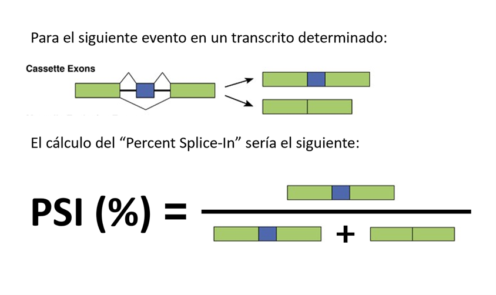
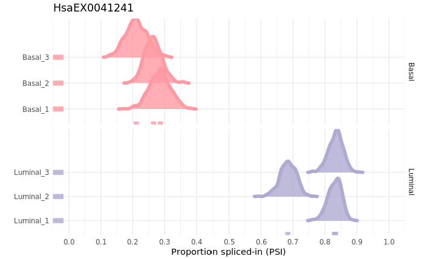

git clone https://gitlab.com/aghr/matt.gitAlternative Splicing
1 Matt
Matt es un paquete diseñado por Dr. Manuel Irimia para el análisis de eventos de splicing alternativo. Incluye funciones básicas para la manipulación de tablas, extracción de características relacionadas con exones e intrones, análisis de características discriminantes, mapas de motivos para proteínas de unión a ARN, etc. Cita:
Gohr, A., & Irimia, M. (2019). Matt: Unix tools for alternative splicing analysis. Bioinformatics (Oxford, England), 35(1), 130–132. https://doi.org/10.1093/bioinformatics/bty606
Trabajamos en Terminal
1.1 Instalación de matt
En el terminal, nos movemos a la carpeta donde queramos guardar Matt en nuestro ordenador o superordenador. Una vez ahí tenemos que crear un clon del repositorio de git:
A continuación, tenemos que ejecutar el script de instalación:
chmod u+rwx ./INSTALLY corremos el script:
./INSTALLUna vez tengamos instalado Matt temenos que hacer que sus funciones formen parte del PATH para que se pueda ejecutar desde cualquier carpeta. Esto lo hacemos con la siguiente línea de comandos:
export PATH=~/directorio/donde/hayas/guardado/matt:$PATH
echo 'export PATH=~ directorio/donde/hayas/guardado/matt:$PATH' >> ~/.bashrcPara comprobar que temenos matt instalado Podemos hacer la prueba de esctibir en el terminal el propio nombre:
mattY el output que nos debe devolver es el siguiente:
Matt v. 1.3.1
Usage: matt <command> ...
Commands:
*Import data / check table *Maths and statistics
chk_nls: check newlines in table col_calc: apply calculations to columns
.
.
..
.
.
test_regexp_enrich: test REGEXP enrichment
Attention: Tables processed by Matt must contain a header with column names and must not contain " characters with exception of regular expressions. All other " characters will be ignored and removed. When using MS Excel for table generation, please save tables in format Windows Text. Matt recognizes Windows newlines, but not DOS nor old-style MacOS newlines (CR or \r only). Use command chk_nls to see and check newlines in tables.Una vez instalado matt, es necesario comprobar que temenos instalado una de las herramientas del NCBI que es la que utiliza para funcionar: SRA-Tool Kit.
1.2 Instalación de SRA-Toolkit
Para comprobar si la temenos, en debemos hacer la prueba de esctibir en el terminal una de sus funciones, como por ejemplo:
sraY el output que nos debe devolver es el siguiente:
sra-pileup sra-search.3 sra-sort-cg.3.0.7 sra-stat.3.0.7 sratools.3.0.7
sra-pileup-orig.3.0.7 sra-search.3.0.7 sra-sort.3 srapath
sra-pileup.3 sra-sort sra-sort.3.0.7 srapath-orig.3.0.7
sra-pileup.3.0.7 sra-sort-cg sra-stat srapath.3
sra-search sra-sort-cg.3 sra-stat.3 srapath.3.0.7También debemos comprobar la versión de que tenemos instalada (debe de ser superior a la 2.8.0):
vdb-config –versionEl output será el siguiente:
SRA-Toolkit 3.0.7Si tienes la última versión guay, sino tienes que instalarla mediante los siguientes comandos en el terminal (comando cogidos de la página oficial para Linux, si tienes Mac o Windows busca en la página principal de SRA (enlace) la forma de instalarlo).
Primero descargamos la herramienta (recomendable crear una carpeta donde meterlo)
wget --output-document sratoolkit.tar.gz https://ftp-trace.ncbi.nlm.nih.gov/sra/sdk/current/sratoolkit.current-ubuntu64.tar.gzA continuación lo instalamos:
tar -vxzf sratoolkit.tar.gzA continuación metemos la herramienta en el PATH:
export PATH=~/directorio/donde/hayas/guardado/sratoolkit.current-ubuntu64.tar.gz/bin:$PATH
echo 'export PATH=~ directorio/donde/hayas/guardado/sratoolkit.current-ubuntu64.tar.gz/bin:$PATH' >> ~/.bashrcA continuación es recommendable comprobar que funciona:
which fastq-dumpEl output será el siguiente:
/Users/JoeUser/sratoolkit.current-ubuntu64.tar.gz/bin /fastq-dumpTambién podemos probar que sea funcional:
fastq-dump --stdout -X 2 SRR390728El output será el siguiente:
Read 2 spots for SRR390728
Written 2 spots for SRR390728
@SRR390728.1 1 length=72
CATTCTTCACGTAGTTCTCGAGCCTTGGTTTTCAGCGATGGAGAATGACTTTGACAAGCTGAGAGAAGNTNC
+SRR390728.1 1 length=72
;;;;;;;;;;;;;;;;;;;;;;;;;;;9;;665142;;;;;;;;;;;;;;;;;;;;;;;;;;;;;96&&&&(
@SRR390728.2 2 length=72
AAGTAGGTCTCGTCTGTGTTTTCTACGAGCTTGTGTTCCAGCTGACCCACTCCCTGGGTGGGGGGACTGGGT
+SRR390728.2 2 length=72
;;;;;;;;;;;;;;;;;4;;;;3;393.1+4&&5&&;;;;;;;;;;;;;;;;;;;;;<9;<;;;;;464262
Note
Todo lo hecho a partir de aquí está en:
1.3 Cargar los datos del dataset seleccionados
Para cargar los datos vamos a usar una función de matt (retr_rnaseq) que permite al usuario recuperar datos de ARN-seq del Gene Expression Omnibus (GEO), un repositorio público donde muchos investigadores almacenan sus datos de ARN-seq relacionados con sus publicaciones. Teniendo a mano los números de acceso GEO de los conjuntos de datos RNA-seq, este comando descarga los archivos SRA, extrae las lecturas de ARN-seq como archivos FASTQ o FASTA y, si lo desea renombra los archivos FASTA/FASTQ extraídos como especifique el usuario.
Para ello tenemos que crear un .txt (con los nombres separados por un tab) como en el ejemplo:
Una vez que lo tenemos creado tenemos que subirlo a la misma carpeta en la que vayamos a hacer la descarga de los datos y los análisis. El siguiente paso es descargar de GEO los .gz de las muestras seleccionadas:
matt retr_rnaseq accession_numbers.txt -keepsra -o rnaseq_data -p 6Con este comando lo que hacemos es que se descarguen lo indicado (indicando el documento en el que se encuentran los datos, sin borrar los archivos SRA (-keepsra) en una carpeta nueva (-o rnaseq_data) y que el trabajo se divida entre 6 cores del superordenador (-p 6)
Este comando tarda bastante por lo que es recomendable usar los siguientes comandos para poner en segundo plano un trabajo y desvincularlos de la sesión de trabajo, lo cual es recomendable porque nos permitirá continuar trabajando en el servidor mientras se están ejecutando los trabajos mandados. Otra ventaja es que, al desvincularlos de la sesión de trabajo podremos cerrar el terminal sin preocuparnos de que se paren los procesos. Si cerráramos el terminal sin desvincular el trabajo de nuestra sesión (la sesión está asociada al terminal de trabajo) este trabajo se interrumpiría en el momento de cerrar el terminal (y, por lo tanto, la sesión). Para ello debemos ejecutar lo siguientes comandos:
- Ejecutamos el trabajo que queramos hacer, en nuestro caso usaremos el ejemplo anterior:
matt retr_rnaseq accession_numbers.txt -keepsra -o rnaseq_data -p 6- Tras esto comenzará a ejecutarse. En este momento tenemos que parar el proceso con la combinación de teclas
Control + z. El output debe ser el siguiente:
[1]+ Stopped matt retr_rnaseq accession_numbers.txt -keepsra -o rnaseq_data -p 6- En este punto tendremos el proceso parado y podremos escribir comandos. Lo siguiente que debemos hacer es mandar el trabajo a ejecutarse en segundo plano (mandar al background) con el siguiente comando:
bg
#Output:
[1]+ matt retr_rnaseq accession_numbers.txt -keepsra -o rnaseq_data -p 6 &
#Y significará que se ha reanudado la ejecución en segundo plano.
Tip
Y significará que se ha reanudado la ejecución en segundo plano.
matt retr_rnaseq accession_numbers.txt -keepsra -o rnaseq_data -p 6 &- Una vez que hayamos ejecutado el proceso en segundo plano pasamos al siguiente paso que es desvincular el proceso del terminal (sesión) en el que lo hemos corrido para que continúe ejecutándose si cerramos sesión. Para ello usamos el comando:
disownEl output del terminal no se guardará en ningún lado si los cerramos (el terminal) de manera que si queremos dejar un proceso funcionando y luego poder consultar qué mensajes nos ha dado el proceso (para chequear si ha ido bien o ha habido algún error durante el procesamiento). Podemos hacer que los mensajes que saldrían en el terminal se guarden en un .txt para luego poder consultarlos utilizando el siguiente comando:
Proceso_mandado_a_ejecutar 1>Nombre_que_le_quieras_poner_al_documento.outEste comando debe de utilizarse de la siguiente manera (en el siguiente ejemplo mi documento se llamará documento_ejemplo.out y lo voy a ejecutar directamente en segundo plano con el comando “&” previamente explicado):
matt retr_rnaseq accession_numbers.txt -keepsra -o rnaseq_data -p 6 1>documento_ejemplo.out &Con esto haremos que se guarde un documento .out (que se puede leer como .txt) en la carpeta en la que estemos trabajando y que el proceso se lance directamente en segundo plano por lo que solo necesitaríamos aplicar el comando disown para desvincularlo de la sesión y podremos descuidarnos.
Los datos se nos descargaran en la carpeta rnaseq_data que hemos escrito en el código ejecutado. Cuando finalice, accedemos a esa carpeta y ejecutamos el comando ls (para ver el listado de archivos que contiene esta carpeta) veremos lo siguiente:
Basal_2_1.fastq.gz Luminal_1_1.fastq.gz Luminal_2_1.fastq.gz SRR1919599.sra SRR1919603.sra
Basal_2_2.fastq.gz Luminal_2_2.fastq.gz SRR1919600.sra SRR1919604.sra dataset_info.tab
Basal_1_1.fastq.gz Basal_3_1.fastq.gz Luminal_3_1.fastq.gz SRR1919601.sra Basal_1_2.fastq.gz
Basal_3_2.fastq.gz Luminal_1_2.fastq.gz Luminal_3_2.fastq.gz SRR1919602.sra Una vez en este punto comenzaremos el alineamiento con Vast-Tools.
2 Vast-Tools
Vertebrate Alternative Splicing and Transcription Tools (VAST-TOOLS) es un conjunto de herramientas para perfilar y comparar eventos de splicing alternativo en datos de RNA-Seq. Es especialmente adecuado para comparaciones evolutivas. Funciona en sinergia con el servidor web VastDB y Matt, un conjunto de herramientas para el análisis posterior del splicing alternativo. Enlace a GitHub. Citas:
- Capítulo de libro donde viene todo incluso un ejemplo
Gohr, A., Mantica, F., Hermoso-Pulido, A., Tapial, J., Márquez, Y., & Irimia, M. (2022). Computational Analysis of Alternative Splicing Using VAST-TOOLS and the VastDB Framework. Methods in molecular biology (Clifton, N.J.), 2537, 97–128. https://doi.org/10.1007/978-1-0716-2521-7_7
- Artículo original
Irimia, M., Weatheritt, R.J., Ellis, J., Parikshak, N.N., Gonatopoulos-Pournatzis, T., Babor, M., Quesnel-Vallières, M., Tapial, J., Raj, B., O’Hanlon, D., Barrios-Rodiles, M., Sternberg, M.J.E., Cordes, S.P., Roth, F.P., Wrana, J.L., Geschwind, D.H., Blencowe, B.B. (2014). A highly conserved program of neuronal microexons is misregulated in autistic brains. Cell, 59:1511-23.
- Artículo principal
Tapial, J., Ha, K.C.H., Sterne-Weiler, T., Gohr, A., Braunschweig, U., Hermoso-Pulido, A., Quesnel-Vallières, M., Permanyer, J., Sodaei, R., Marquez, Y., Cozzuto, L., Wang, X., Gómez-Velázquez, M., Rayón, M., Manzanares, M., Ponomarenko, J., Blencowe, B.J., Irimia, M. (2017). An atlas of alternative splicing profiles and functional associations reveals new regulatory programs and genes that simultaneously express multiple major isoforms. Genome Res, 27(10):1759-1768
- Artículo de análisis de Intron Retention
Braunschweig, U., Barbosa-Morais, N.L., Pan, Q., Nachman, E., Alipahani, B., Gonatopoulos-Pournatzis, T., Frey, B., Irimia, M., Blencowe, B.J. (2014). Widespread intron retention in mammals functionally tunes transcriptomes. Genome Research, 24:1774-86
Trabajamos en Terminal
2.1 Instalación de Vast-Tools
En el terminal, tenemos que crear un clon del repositorio de git:
git clone https://github.com/vastgroup/vast-tools.gitEsto nos va a crear una carpeta en el directorio donde hagamos la clonación que se llamará vast-tools. Debemos acceder a esta carpeta y tenemos que crear una nueva carpeta que se llame “VASTDB” (con el comando mkdir VASTDB) con el cual tenemos que ejecutar los siguientes comandos:
wget https://vastdb.crg.eu/libs/vastdb.hs2.23.06.20.tar.gz
wget https://vastdb.crg.eu/libs/vastdb.mm2.23.06.20.tar.gz
wget https://vastdb.crg.eu/libs/vastdb.rno.23.06.20.tar.gzCon esto hemos instalado las librerías para hacer el alineamiento en humano (última vesión del genoma), en ratón y en rata, respectivamente. Si necesitamos realizar alineamientos con otras especies hay que acceder el github de Vast-Tolols.
Una vez hemos instalado esto tenemos que añadir Vast-Tools al PATH para que se pueda ejecutar desde cualquier carpeta. Esto lo hacemos con la siguiente línea de comandos:
export PATH=~/directorio/donde/hayas/guardado/vast-tools:$PATH
echo 'export PATH=~ directorio/donde/hayas/guardado/ vast-tools:$PATH' >> ~/.bashrcPara comprobar que temenos matt instalado Podemos hacer la prueba de esctibir en el terminal el propio nombre:
Vast-toolsY el output que nos debe devolver es el siguiente:
VAST-TOOLS v2.5.1
Usage: vast-tools sub-commands [options]
[sub-commands]
align : Align RNA-Seq reads to exon-exon junctions and quantify AS
merge : Merge vast-tool outputs from multiple sub-samples
combine : Combine two or more 'aligned' RNA-Seq samples into summary tables.
.
..
.
.
Performance:
-o/--offrate <int> override offrate of index; must be >= index's offrate
-p/--threads <int> number of alignment threads to launch (default: 1)
--mm use memory-mapped I/O for index; many 'bowtie's can share
--shmem use shared mem for index; many 'bowtie's can share
Other:
--seed <int> seed for random number generator
--verbose verbose output (for debugging)
--version print version information and quit
-h/--help print this usage messageTambién tenemos que instalar una serie de paquetes para R con los siguientes comandos:
R -e 'install.packages(c("optparse", "RColorBrewer", "reshape2", "ggplot2", "devtools"))'
R -e 'devtools::install_github("kcha/psiplot")'
Continuamos trabajando en Terminal aunque sea con R
La instalación de estos paquetes pueden necesitar de la actualización e instalación de otros, de manera que tendremos que ir comprobando cuales son necesarios y e instalarlos (buscando en internet como instalarlos). Tuve bastantes problemas con esto así que podéis encontrar la solución en el documento del terminal de este día. Una vez instalado vast-tools, es necesario comprobar que tenemos instalado una herramienta de alineamiento: bowtie.
Note
Todo lo hecho a partir de aquí está en:
2.2 Instalación de bowtie
Para comprobar si la temenos, en debemos hacer la prueba de esctibir en el terminal una de sus funciones, como por ejemplo:
No index, query, or output file specified!
Usage:
bowtie [options]* <ebwt> {-1 <m1> -2 <m2> | --12 <r> | --interleaved <i> | <s>} [<hit>]
<m1> Comma-separated list of files containing upstream mates (or the
.
.
Performance:
-o/--offrate <int> override offrate of index; must be >= index's offrate
-p/--threads <int> number of alignment threads to launch (default: 1)
--mm use memory-mapped I/O for index; many 'bowtie's can share
--shmem use shared mem for index; many 'bowtie's can share
Other:
--seed <int> seed for random number generator
--verbose verbose output (for debugging)
--version print version information and quit
-h/--help print this usage messageTambién debemos comprobar la versión de que tenemos instalada (debe de ser la versión 1, tener cuidado porque también existe bowtie2 y esa nos va a dar error). Para instalarlo tenemos que escribir los siguientes comandos:
sudo apt-get update -y
sudo apt-get install -y bowtieSi está correctamente instalado todo pasamos al alineamiento con Vast-Tools.
2.3 Teoría sobre el Splicing Alternativo
El splicing alternativo genera múltiples ARNm diferentes y proteínas derivadas a partir de un único gen mediante la inclusión o exclusión de exones específicos. Este proceso ocurre en el 95% de los genes multiexónicos y está catalizado por el spliceosoma, un complejo formado por un núcleo de cinco pequeñas ribonucleoproteínas nucleares (U1, U2, U4, U5 y U6). El espliceosoma cuenta con la ayuda de más de 200 factores trans-actores que reconocen secuencias reguladoras cis dentro del pre-ARNm y dirigen el spliceosoma para incluir o excluir exones específicos. Así pues, las variantes de empalme pueden surgir de mecanismos que incluyen promotores alternativos, uso preferente de exones o sitios de splicing, alteración del orden de los exones y poliadenilación alternativa
El splicing alternativo ofrece una importante ventaja evolutiva al proporcionar una gran fuente de diversidad proteómica. El splicing alternativo suele estar regulado a nivel tisular, y las variantes específicas de tejido cooperan para modular las redes de interacción proteína-proteína. Las células madre expresan variantes de empalme específicas en cada etapa de diferenciación, siendo las células madre indiferenciadas las que mantienen los niveles más altos de diversidad de isoformas de empalme. El empalme alternativo también es crítico en el desarrollo y puede responder a estímulos externos normales. Al igual que otras vías relacionadas con el desarrollo, el splicing alternativo puede ser regulado de forma aberrante por las células cancerosas para su beneficio. en beneficio propio. Los estudios del genoma completo revelan desde hace tiempo la existencia de patrones de splicing específicos del cáncer.
Chen, J., Weiss, W. Alternative splicing in cancer: implications for biology and therapy. Oncogene 34, 1–14 (2015). https://doi.org/10.1038/onc.2013.570
2.4 Alineamineto para Splicing Alternativo (SA)
2.4.1 Definiciones
En este paso, para aumentar la fracción de lecturas de unión de mapeo dentro de cada muestra de RNA-Seq, vast-tools divide automáticamente cada lectura en grupos de lectura de 50 nucleótidos (nt), utilizando por defecto una ventana deslizante de 25 nt (opción --stepSize). Por ejemplo, una lectura de 100 nt produciría 3 lecturas superpuestas (de las posiciones 1-50, 26-75 y 51-100). Además, se combinan las dos lecturas de la secuenciación por pares, si están disponibles. Para la cuantificación, sólo se considera un recuento aleatorio por grupo de lecturas (es decir, todas las sublecturas procedentes de la misma lectura original) para evitar el recuento múltiple de la misma molécula secuenciada original.
Tip
Es muy recomendable que los caracteres especiales (‘-’, ‘.’, etc.) no formen parte de los nombres de los archivos fastq, ya que pueden causar problemas imprevistos; utilice ’_’ en su lugar. (El uso de ‘-’ está reservado para proporcionar la longitud de lectura (legado) o especificar que las lecturas han sido sustraídas del genoma; ver más abajo).
Actualmente, vast-tools soporta múltiples especies y ensamblajes y está en constante crecimiento en coordinación con VastDB. A partir de la v2.4.0, la especie se proporciona utilizando el ensamblaje estándar (por ejemplo, hg38, mm9, etc).
Los eventos de splicing vendrán definidos como:
PSI (Percent Splice-In), que define los diferentes eventos de “Exon-Exon Junction”.
PSU (Percent Splice-site usage), que define los eventos de “alternative splice sites”
PIR PIR (Percent of Intron Retention), que define los eventos de “intrón retention”
Estas medidas son porcentajes que dependen del número de veces que ha ocurrido un evento y se calcula como nº de veces que ocurre un evento en un gen con respecto al número de transcritos cuantificados:

Para habilitar el análisis de expresión génica, utilizar la opción “–expr“ (cálculos PSI/PSU/PIRs y cRPKM (lecturas corregidas por aplicabilidad por Kbp y millones de lecturas mapeadas)]o “–exprONLY” (solo cRPKMs). Los cRPKMs se obtienen mapeando solo los primeros 50 nucleótidos de cada lectura, o solo los primeros 50 nucleótidos de la lectura directa si se proporcionan lecturas de extremo pareado.
A continuación hay se muestra un esquema del funcionamiento y posibilidades de vast-tools:
2.4.2 Alineamiento
Como hemos repetido, para el alineamiento vamos a utilizar la herramienta Vast-Tools. Para ello vamos a la carpeta en la que tengamos los archivos a analizar (tras procesarlos en matt) y allí ejecutamos el comando vast-tool align (que lo explicaré con sus argumentos a continuación con la imgen 2):
vast-tools align Luminal_1_1.fastq.gz Luminal_1_2.fastq.gz -sp Hs2 -o Vast-Tool_Align --expr --IR_version 2 -c 8 -n Luminal_1
Nota 1
Este ejemplo es para cuando tenemos análisis Pair-end, de manera que tendremos un archivo (“Luminal_1_1.fastq.gz”) para la secuenciación 3’->5’ y otro (“Luminal_1_2.fastq.gz”) para la secuenciación 5’->3’. Si tuviéramos un análisis Single-end solo tendríamos que poner el único archivo que se nos hubiera descargado para esa muestra.
Nota 2
Cuidado de no excedernos en el argumento -c porque si vamos a lanzar varios procesos a la vez podemos colapsar el superordenador.
Nota 3
La expresión génica la calcula como corrected-RPKM values (cRPKM) (es decir, que la normaliza e función de la “effective length, la cual consiste en la media de la longitud de todos los transcritos de un gene poderada por la proporción de la expresión de cada transcrito.
Realmente el código que yo he corrido es el siguiente para añadir funciones (previamente explicadas):
vast-tools align Luminal_1_1.fastq.gz Luminal_1_2.fastq.gz -sp Hs2top -o Vast-Tool_Align --expr --IR_version 2 -c 8 -n Luminal_1 1>Alineamiento_luminal_1.out &Con esto le añado al final el comando 1>Alineamiento_luminal_1.out para que me genere un archivo con los mensajes del terminal t así luego poder chequearlos y el comando & para que lo ejecute en segundo plano y así poder seguir usando el terminal (si quisiera desvincularlo a mi sesión ahora podría utilizar disown y podría cerrar el terminal sin miedo a parar el proceso).
2.5 Creación de tabla de datos conjunta
Note
Todo lo hecho a partir de aquí está en:
En el paso anterior hemos generado los PSI para cada una de la muestras por lo que ahora tendremos que mergear esas tablas para crear una única tabla de trabajo
El siguiente paso es combinar en una tabla todos los eventos de cada muestra. Para ello usaremos el comando vast-tools combine. Para utilizar este comando tenemos que estar en la carpeta que contenga la carpeta donde se han generado los alineamientos (la generada tiene que contener la subcarpeta llamada to_compare):
vast-tools combine -sp Hs2 -o Vast-Tool_Aling –cores 6El comando combinará teniendo en cuenta la versión del genoma humano -hg38- (-sp Hs2). Con el argumento -o <directorio> indicamos la carpeta que contiene los archivos a analizar. Tiene que ser la carpeta previamente mencionada, la que contiene la subcarpeta llamada “to_compare” (que coincide con la que pusimos en el argumento -o en el comando del alineamiento (el paso anterior). Con el argumento –cores <nº_cores> indicamos el número de cores o CPUs del superordenador que queremos que se utilicen para este proceso (por defecto se utiliza 1, con 6 va bastante rápido y en 3-5 min está hecho).
Tip
Para más opciones siempre podemos consultar la ayuda del comando con
vast-tools combine -hUna vez que hemos corrido el código se genera un archivo llamado INCLUCION_table.tab (con especificaciones de nuestra muestra en el nombre) la cual la podemos extraer del servidos para leerla en R:
Inclusion_table<-read.delim("INCLUSION_LEVELS_FULL-hg38-6.tab", header = TRUE, sep = "\t")
View(Inclusion_table)Donde cada una de estas columnas nos da la siguiente información:
Columna 1 (GENE). Official Gene Symbol
COlumna 2 (EVENT). ID del evento en VAST-DB compuesto por:
- Identificador de Especie: Hsa (human), Mmu (ratón), Gga (pollo)
- Tipo de evento de splicing: alternative exon skipping (EX), retained intron (INT), alternative splice site donor choice (ALTD), or alternative splice site acceptor choice (ALTA). En el caso de ALTD/ALTA, cada uno de los sitions de spling está indicado (desde el interior del exon hacia afuera) sobre el total de número de sitios de splicing en el evento (e.g. HsaALTA0000011-1/2)
- Identificador numérico
Columna 3 (COORD). Coordenada en el genoma de la secuencia
Columna 4 (LENGHTH). Longitud de la secuencia, En evntos ALTF/ALTA el primer sitio de splicing para cada evento se asume como nucleótido 0.
Columna 5 (FullCO). Conjunto completo de coordenadas de la secuencia del evento de splicing alternativo.
- Para EX: chromosome:C1donor,Aexon,C2acceptor. Donde C1donor es el donante del exón “de referencia” aguas arriba, C2acceptor es el aceptor del exón “de referencia” aguas abajo y A es el exón alternativo. La cadena es “+” si C1donor < C2acceptor. Si existen múltiples aceptores/donantes en cualquiera de los exones, se muestran separados por “+”. NOTA: Las coordenadas C1/C2 “de referencia” aguas arriba y aguas abajo no son necesariamente los exones C1/C2 aguas arriba y aguas abajo más cercanos, sino los más externos con suficiente soporte (para facilitar el diseño de cebadores, etc.). Si desea realizar análisis de las características de los exones y/o dibujar mapas de unión a ARN, se recomienda utilizar Matt.
- Para ALTD: chromosome:Aexon,C2acceptor. Los múltiples donor del evento se separan con “+”.
- Para ALTA: chromosome:C1donor,Aexon. Multiples acceptors del evento se separan con “+”.
- Para INT: chromosome:C1exon=C2exon:strand.
Columna 6 (COMPLEX): Tipo de evento:
- S, C1, C2, C3: Eventos de Exon-EXON Junction (EEJ) se cuantifican mediante splice site-based or transcript-based modules, con un incremento de los grados de complejidad (basado en Score 5 de un amplio panel de muestras de RNA-seq).
- ANN: exon skipping (EX) events quantified by the ANNOTATION module. Their IDs also start by ≥ 6 (e.g. HsaEX6000001).
- MIC: exon skipping (EX) que son microexones.
- IR: eventos intron retention.
- Alt3: eventos ALTA.
- Alt5: eventos ALTD.
A continuación, para cada muestra compilada hay una pareja de columnas que indican:
Columna 7 (Name_Sample): Porcentaje estimado de inclusión en la secuencia (PSI/PSU/PIR). PSI: percent spliced-in (para EEJ y EX). PSU: percent splice site usage (para ALTD y ALTA). PIR: percent intron retention (para INT).
Columna 8 (Name_Sample.Q): Puntuaciones de calidad y número de lecturas de inclusión y exclusión corregidas (qual@inc,exc):
Score 1. Cobertura de lectura, basada en lecturas reales (como la utilizada en Irimia et al, Cell 2014). Esta es la única puntuación de cobertura utilizada por
compare,tidyyplot- Para EX (excepto módulo microexón): OK/LOW/VLOW: (i) ≥20/15/10 lecturas reales (es decir, antes de la corrección de mapeabilidad) mapeadas a todas las uniones de empalme de exclusión, O (ii) ≥20/15/10 lecturas reales mapeadas a uno de los dos grupos de uniones de empalme de inclusión (aguas arriba o aguas abajo del exón alternativo), y ≥15/10/5 al otro grupo de uniones de empalme de inclusión.
- Para EX (módulo de microexón): OK/LOW/VLOW: (i) ≥20/15/10 lecturas reales asignadas a la suma de uniones de empalme de exclusión, O (ii) ≥20/15/10 lecturas reales asignadas a la suma de uniones de empalme de inclusión.
- Para INT: OK/LOW/VLOW: (i) ≥20/15/10 lecturas reales mapeadas a la suma de uniones de empalme de exclusión, O (ii) ≥20/15/10 lecturas reales mapeadas a una de las dos uniones de inclusión exón-intrón (el 5’ o 3’ del intrón), y ≥15/10/5 a las otras uniones de empalme de inclusión.
- Para ALTD y ALTA: OK/LOW/VLOW: (i) ≥40/25/15 lecturas reales mapeadas a la suma de todas las uniones de empalme implicadas en el evento específico.
- Para cualquier tipo de evento: SOK: los mismos umbrales que OK, pero un número total de lecturas ≥100.
- Para cualquier tipo de evento: N: no alcanza el umbral mínimo (VLOW).
Score 2. Read coverage, based on corrected reads (similar values as per Score 1).
Score 3.Esta puntuación se ha reciclado para contener información diferente de la versión v2.2.2:
- EX (excepto módulo microexón): recuentos de lecturas totales en bruto que admiten inclusión aguas arriba, inclusión aguas abajo y omisión (formato INC1=INC2=EXC).
- EX (módulo de microexones): recuentos de lecturas totales sin procesar que admiten inclusión y exclusión (formato INC=EXC).
- ALTD y ALTA: valor tipo PSI del exón que alberga el evento ALTD/ALTA. Esta puntuación se utiliza para filtrar eventos en
comparebasándose en la opción--min_ALT_use. - IR (a partir de v2.1.3): número corregido de lecturas del cuerpo del intrón (en una muestra de 200 pb en la mitad del intrón, o de todo el intrón si es más corto), y el número de posiciones mapeables en esa muestra (máximo 151 posiciones) (formato READS=POSICIONES).
- Antes de la v2.1.3: Cobertura de lectura, basada en lecturas no corregidas que corresponden únicamente a las uniones de empalme C1A, AC2 o C1C2 de referencia (valores similares a los de la puntuación 1).
Score 4. Esta puntuación tiene un significado diferente según el tipo de evento AS:
- EX (excepto para el módulo microexon): Desequilibrio de lecturas asignadas a las uniones de empalme de inclusión.
- OK: la relación entre el número total de lecturas corregidas que apoyan la inclusión de uniones de empalme aguas arriba y aguas abajo del exón alternativo es < 2.
- B1: la relación entre el número total de lecturas corregidas que apoyan la inclusión de los empalmes de empalme aguas arriba y aguas abajo del exón alternativo es > 2 pero < 5.
- B2: la relación entre el número total de lecturas corregidas que apoyan la inclusión de empalmes de empalme aguas arriba y aguas abajo del exón alternativo es > 5 (pero ninguna es 0).
- B3: cuando las lecturas corregidas para la inclusión de un lado son al menos 15 y 0 para el otro. Se utiliza para filtrar eventos en
comparecuando la opción--noB3está activada. - Bl/Bn: baja (entre 10 y 14)/ninguna cobertura de lectura (entre 1 y 9) para las uniones de empalme que apoyan la inclusión.
- EX (módulo de microexones): “na” (no se proporciona información).
- ALTD y ALTA: recuentos de lecturas brutas para el sitio de empalme específico, para todos los sitios de empalme del evento juntos (=lecturas totales) y para los que admiten la omisión del exón anfitrión. En versiones anteriores a la v2.2.2: lecturas totales del evento para todas las combinaciones o sólo para el aceptor de referencia (para ALTD) o donante (para ALTA).
- IR: recuentos de lecturas brutas que corresponden a la unión exón-intrón aguas arriba, intrón-exón aguas abajo y exón-exón en el formato EIJ=IEJ=EEJ). En versiones anteriores a la v2.2.2, se mostraban los recuentos corregidos en lugar de los recuentos de lecturas en bruto.
- EX (excepto para el módulo microexon): Desequilibrio de lecturas asignadas a las uniones de empalme de inclusión.
Score 5.Esta puntuación tiene un significado diferente según el tipo de evento:
- EX (excepto para el módulo microexon): Complejidad del evento. La puntuación se refiere al número de lecturas que proceden de las uniones “de referencia” C1A, AC2 y C1C2. La complejidad aumenta a medida que: S < C1 < C2 < C3.
- S: el porcentaje de lecturas complejas (es decir, las lecturas de inclusión y exclusión que no corresponden a las uniones de empalme C1A, AC2 o C1C2 de referencia) es < 5%.
- C1: el porcentaje de lecturas complejas es > 5% pero < 20%.
- C2: el porcentaje de lecturas complejas es > 20% pero < 50%.
- C3: el porcentaje de lecturas complejas es > 50%.
- NA: evento de baja cobertura.
- EX (módulo de microexones): “na” (no se proporciona información).
- ALTD y ALTA: puntuación de complejidad similar a la de los exones. En este caso, un determinado donante (para ALTA) o aceptor (para ALTD) se considera el sitio “de referencia”, y las lecturas complejas son las procedentes de cualquier otro donante/aceptor.
- IR: valor p de una prueba binomial de equilibrio entre las lecturas asignadas a las uniones exón-intrón aguas arriba y aguas abajo, modificado por las lecturas asignadas a una ventana de 200 pb en el centro del intrón (véase Braunschweig et al., 2014).
- EX (excepto para el módulo microexon): Complejidad del evento. La puntuación se refiere al número de lecturas que proceden de las uniones “de referencia” C1A, AC2 y C1C2. La complejidad aumenta a medida que: S < C1 < C2 < C3.
inc,exc. número total de lecturas, corregido para la mapeabilidad, que admiten inclusión y exclusión, de forma que PSI = inc/(inc+exc). Así, cuando las lecturas de inclusión implican conjuntos de uniones aguas arriba y aguas abajo, inc y exc se escalan.
Pero nos podemos quedar con el primer score como referencia.
2.6 Comparación entre grupos (Análisis de Splicing diferencial)
2.6.1 Definiciones
Vast-tools genera comparaciones entre grupos principalmente mediante la comparación de las medias de sus respectivos percent inclusión levels del evento (PSI, PSU o PIR, dependiendo del evento). Un detalle importante es que a partir de ahora vamos a referirnos a todos los inclusión levels como PSI independientemente del evento que sea, aunque si quieres ser purista, para las gráficas deberías de poner el percent inclusión level correspondiente
Recordamos que PSI es para Exon-Exon Juction (EEJ, que incluye todos los tipos de exón skipping), el PSU hace referencia a los Alternative Splice Aites (5’ y 3’) y el PIR hace referencia a los eventos de Intron retention
Para eventos AS válidos, vast-tools compare requiere que el valor absoluto de ΔPSI sea superior a un umbral proporcionado como --min_dPSI. Además, requiere que la distribución PSI de los dos grupos no se superponga. Esto puede modificarse con la opción --min_range, para proporcionar un mayor o menor rigor. A mayor diferencia mayor rigor. Estos valores los vemos definidos en la siguiente imagen:
También es posible imprimir otros conjuntos de eventos AS de especial interés para comparaciones de características (por ejemplo, utilizando Matt). Esto puede hacerse utilizando la opción --print_sets. Producirá tres conjuntos de eventos AS:
Eventos constitutivos (CS), que corresponden a aquellos con PSI < 5 (para IR) o PSI > 95 (para todos los demás tipos) en todas las muestras comparadas;
Eventos crípticos (CR), que corresponden a aquellos con PSI > 95 (para IR) o PSI < 5 (para todos los demás tipos) en todas las muestras comparadas;
Eventos AS no cambiantes (AS_NC), que corresponden a aquellos con 10 < av_PSI < 90 en al menos uno de los grupos (o un rango de PSI > 10) y que no cambian entre las dos condiciones. Esto último se especifica con la opción
--max_dPSI. Por defecto, se toma 1/5 del--min_dPSIproporcionado.
Esto último hay que tenerlo en cuenta si vamos a descargar los datos (la “inclusion table” que generamos en el paso anterior). Los eventos de splicing constitutivos son aquellos que van se van a dar siempre por lo cual, su PSI va a ser de 100, mientras que los que no se dan nunca van a tener un valor de PSI de 0. Esto se conoce como eventos de tipo “switch” (ON/OFF). El resto son más fluctuantes y son a los que les podemos evaluar verdaderamente un Splicing Diferencial. Es por ello por lo que al comenzar el procedimiento si lo hacemos en R tenemos que establecer filtros como veremos posteriormente.
2.6.2 Procedimiento en terminal
Para la comparación entre grupos y las consecutivas gráficas tendremos que instalar-actualizar bastantes paquetes de R que se nos habrá indicado en el output del proceso anterior. Instalarlos todos antes de continuar. Una vez instalados todos los paquetes que necesitaremos procedemos al proceso de comparación con el comando “vast-tools compare”, el cual lo tenemos que ejecutar en la carpeta en la que hemos generado la combinación (en nuestro caso, y siguiendo con el ejemplo, tendremos que acceder a la carpeta Vast-Tool_Aling):
vast-tools compare INCLUSION_LEVELS_FULL-hg38-6.tab -a Basal_1,Basal_2,Basal_3 -name_A Basal_Cells
-b Luminal_1,Luminal_2,Luminal_3 -name_B Luminal_Cells -sp Hs2 --print_dPSI
--GO --print_sets --min_dPSI 25 --min_range 5Los argumentos utilizados definen lo siguiente:
INCLUSION_LEVELS_FULL-especie_y_version que hayamos utilizado-nº_muestras_procesadas.tab, Este primer argumento se utiliza para indicar dónde se encuentran los datos. Estos datos se encuentran en un archivo que se ha generado con la funciónto_comparepreviamente en la carpeta que habíamos indicado, por eso teníamos que acceder a dicha carpeta (en nuestro casoVast-Tool_Aling)-a muestra_1,muestra_2,muestra_3, en este argumento tenemos que añadir todas las muestras que pertenezcan a este grupo, separadas por comas y sin espacios.-name_A Nombre_Grupo_A, Nombre que le queremos dar al grupo de muestras incluidas en el grupo “a”.-b muestra_1,muestra_2,muestra_3, en este argumento tenemos que añadir todas las muestras que pertenezcan a este grupo, separadas por comas y sin espacios.-name_B Nombre_Grupo_B, Nombre que le queremos dar al grupo de muestras incluidas en el grupo “b”.-Hs2--print_dPSI, ya lo he mos visto previamente--GO, ya lo hemos visto previamente--print_sets, ya lo hemos visto previamente--min_dPSI, ya lo hemos visto previamente--min_range, ya lo hemos visto previamente
Important
A partir de ahora, lo que vamos a ver es trabajando en R pero siguiendo el flujo de trabajo del capítulo de libro de Vast-tools (citado al principio de esta guía). Los resultados trabajando en termial (que lo iré haciendo de forma paralela) se mostrarán en:
2.6.3 Procedimiento en R
Paquetes necesarios:
install.packages("tidyverse")
install.packages("DT")
install.packages("ggplot2", dependencies = TRUE)
install.packages("pheatmap", dependencies = TRUE)
install.packages("RColorBrewer", dependencies = TRUE)
BiocManager::install("PCAtools")
install.packages("ggrepel")Y libraries:
library(tidyverse)
library(DT)
library(ggplot2)
library(pheatmap)
library(RColorBrewer)
library(PCAtools)
library(ggrepel)2.6.3.1 Handmade analysis
Hemos de tener en cuenta dos cosas principales para realizar un prefiltrado de los datos generados con vast-tool combine:
Tip
Esta parte del proceso la voy hacer en R pero en el terminal porque los archivos pesan mucho y tardan en descargarse. Mostraré los códigos que he seguido matizando al inicio de los mismos que se ha hecho en R (de la siguiente manera: #Hecho en R de terminal)
Comenzamos leyendo la tabla INCLUSION_table.tab que hemos generado:
#Hecho en R de terminal
Inclusion_table<-read.delim("INCLUSION_LEVELS_FULL-hg38-6.tab", header = TRUE, sep = "\t")- Eliminar las muestras de poca calidad. Las muestras con calidad “N” deben ser eliminadas (o no consideradas para crear la media del grupo para ese evento). El considerar los VLOW queda más a nuestra decisión.
Important
Para eso, el Dr. Luis Pedro Íñiguez (CRG) me ha proveeido de las siguientes funciones que había que definirlas antes de hacer este paso si no las tenemos defininas:
#Hecho en R de terminal
#remove Ns and VLOW from vast-tools INCLUCION TABLE
removeNVLOW <- function(x){
scores <- grep(".Q",names(x),fixed = T)
score2 <- scores - 1
for(i in score2){x[,i] <- ifelse(grepl("^N|^VLOW",x[,i+1]),NA,x[,i])}
return(x)
}
#remove Ns from vast-tools INCLUSION TABLE
removeNonly <- function(x){
scores <- grep(".Q",names(x),fixed = T)
score2 <- scores - 1
for(i in score2){
x[,i] = ifelse(grepl("^N",x[,i+1]),NA,x[,i])
}
return(x)
}Aplicado a nuestra INCLUSION_Table de manera muy restrictiva sería de la siguiente manera:
#Hecho en R de terminal
rmdf<-removeNonly(df)
#Para ser menos restrictivos usaríamos
#rmdf<-removeNVLOW(Inclusion_table)Una vez hemos hecho el filtro de calidad tenemos que hacer la media de los componentes de cada grupo.
- Establecer los thresolds.
- Difrencia entre las medias. Tenemos que buscar lo mismo que se busca con la varibale
--min_dPSIenvast-tool combine. - Diferencia mínima entre el menor valor de la que tenga media más alta y mayor valor de la que tenga la media más baja. Tenemos que buscar lo mismo que se busca con la varibale
--min_rangeenvast-tool combine. - Eliminar eventos constitutivos. Como explicamos previamente, hay eventos de tipo “switch”. Según este parámetro deben ser excluidos aquellos eventos que en un grupo tenga un PSI>90 y en el otro tengan un PSI<10 (voy a considerar aquellos que NO pasan este threshold aquellos eventos que en uno de los grupos cumpla la condición de 10<PSI<90 pero en el otro no).
Para todo este apartado 2 he desarrollado un código que para usarlo tenemos que definir nuestros grupos muestrales:
#Hecho en R de terminal
Group_1<-"Basal"
Samples_1<-c("Basal_1", "Basal_2", "Basal_3")
Group_2<-"Luminal"
Samples_2<-c("Luminal_1", "Luminal_2", "Luminal_3")También tenemos que definir los thresholds que vamos a poner (a, b, c):
#Hecho en R de terminal
#thresholds para la diferencia entre grupos
min_range=5
min_dPSI=25
#Valores de PSI/PSU/PIR a considerar splicing constitutivo
Const_max=90
Const_min=10Y ya comienza el código (que postermiomente desglorasaré para explicarlo):
#Hecho en R de terminal
dPSI_table<-data.frame("GENE", "EVENT", Group_1, Group_2, "dPSI", "range", "Pass_threshold", "COORD", "LENGTH", "FullCO", "COMPLEX")
colnames(dPSI_table)<-c("GENE", "EVENT", Group_1, Group_2, "dPSI", "range", "Pass_threshold", "COORD", "LENGTH", "FullCO", "COMPLEX") #definimos el nombre de las columnas
#Y también creamos la tabla en la que se van a pasar aquellos que pasen el threshold
dPSI_PASS<-data.frame("GENE", "EVENT", Group_1, Group_2, "dPSI", "range", "Pass_threshold", "COORD", "LENGTH", "FullCO", "COMPLEX")
colnames(dPSI_PASS)<-c("GENE", "EVENT", Group_1, Group_2, "dPSI", "range", "Pass_threshold", "COORD", "LENGTH", "FullCO", "COMPLEX") #definimos el nombre de las columnas
#Por último creamos otra para aquellos que pasen el threshold y cumplan la condición de que 10>PSI>90
dPSI_df<-data.frame("GENE", "EVENT", Group_1, Group_2, "dPSI", "range", "Pass_threshold", "COORD", "LENGTH", "FullCO", "COMPLEX")
colnames(dPSI_df)<-c("GENE", "EVENT", Group_1, Group_2, "dPSI", "range", "Pass_threshold", "COORD", "LENGTH", "FullCO", "COMPLEX") #definimos el nombre de las columnas
#Establecemos los valores mínimos para la definición de las filas
fila_PASS=1
fila_df=1
porcentaje=0.02
Hora_inicio<-Sys.time()
for (i in c(1:nrow(rmdf))){
############################################
##### guardar variables a mantener #########
dPSI_table[i, c(1:2) ]<-rmdf[i,c(1:2)]
dPSI_table[i, c(8:11) ]<-rmdf[i,c(3:6)]
#######################
##### Medias #########
Group_1_mean<-as.numeric(rmdf[i, Samples_1]) %>% mean() %>% round(, digits=5)
Group_2_mean<-as.numeric(rmdf[i, Samples_2]) %>% mean() %>% round(, digits=5)
dPSI_table[i, c(3:4) ]<-c(Group_1_mean, Group_2_mean)
####################
##### dPSI #########
Diff<-Group_2_mean - Group_1_mean
#y ahora hacemos que salga FALSE para aquellos valores que sean inferior al rango mínimo establecido
Diff_threshold<-ifelse(abs(Diff)>min_dPSI, TRUE, FALSE)
##########################
##### Overlaping #########
Rang<-ifelse(Diff>0, min(Group_2_mean)-max(Group_1_mean), min(Group_1_mean)-max(Group_2_mean))
#y vemos si pasa el threshold
Rang_threshold<-ifelse(Diff>0 & min(Group_2_mean)-max(Group_1_mean)>min_range | Diff<0 & min(Group_1_mean)-max(Group_2_mean)>min_range, TRUE, FALSE)
##################################
##### Paso del threshold #########
PASS<-ifelse(Rang_threshold & Diff_threshold, TRUE, FALSE)
#En la columna threshold añadimos si se cumplen los cutoffs que hemos establecido
dPSI_table[i, c(5:7)]<-c(Diff ,Rang, PASS)
######################################
##### #########
##### tabla de thresholds #########
##### #########
######################################
#Ahora solo eventos que han pasado el threshold se van a pasar a una nueva tabla con la que tabajaremos para representar los eventos desregulados
if(!is.na(PASS) & PASS==1){
dPSI_PASS[fila_PASS,]<-dPSI_table[i,]
#Una vez hemos acabado la línea
fila_PASS=fila_PASS+1
}
######################################
##### #########
##### tabla de thresholds #########
##### + 10<PSI<90 #########
######################################
######################################
#Ahora nuevo df en el que se acumularán solo eventos que han pasado el threshold
#y hacemos el bucle
if(!is.na(PASS) & PASS==1 &
((Group_1_mean<Const_max & Group_2_mean>Const_min) |
(Group_2_mean<Const_max & Group_1_mean>Const_min) |
(Group_1_mean<Const_max & Group_2_mean>Const_max) |
(Group_2_mean<Const_max & Group_1_mean>Const_max) |
(Group_1_mean<Const_min & Group_2_mean>Const_min) |
(Group_2_mean<Const_min & Group_1_mean>Const_min))){
dPSI_df[fila_df,]<-dPSI_table[i,]
#Una vez hemos acabado la línea
fila_df=fila_df+1
}
#Se imprime el porcentaje de procesado y la hora
if(i==round(nrow(rmdf)*porcentaje)){
Hora_porcentaje<-Sys.time()
diferencia_segundos <- as.numeric(difftime(Hora_porcentaje, Hora_inicio, units = "secs"))
tiempo_restante_segundos <- diferencia_segundos / (porcentaje)
tiempo_restante_minutos <- tiempo_restante_segundos / 60
tiempo_restante_horas <- tiempo_restante_minutos / 60
print(paste(porcentaje*100, "% (hora:", format(Sys.time(), "%X, %d/%b/%Y) --- Tiempo restante estimado: "), round(tiempo_restante_horas), "h ", round(tiempo_restante_minutos - round(tiempo_restante_horas)*60), "min"))
porcentaje<-porcentaje+0.02
}
if(porcentaje>0.9999999999999999999999999999999999999){
print("------------------------------- Proceso finalizado --------------------------------------")
}
}
Expliación del código
- Comenzamos definiendo las tablas que se van a generar y las filas en las que se van a ir incorporando los resultados:
dPSI_table<-data.frame("GENE", "EVENT", Group_1, Group_2, "dPSI", "range", "Pass_threshold", "COORD", "LENGTH", "FullCO", "COMPLEX")
colnames(dPSI_table)<-c("GENE", "EVENT", Group_1, Group_2, "dPSI", "range", "Pass_threshold", "COORD", "LENGTH", "FullCO", "COMPLEX")
#Y también creamos la tabla en la que se van a pasar aquellos que pasen el threshold
dPSI_PASS<-data.frame("GENE", "EVENT", Group_1, Group_2, "dPSI", "range", "Pass_threshold", "COORD", "LENGTH", "FullCO", "COMPLEX")
colnames(dPSI_df)<-c("GENE", "EVENT", Group_1, Group_2, "dPSI", "range", "Pass_threshold", "COORD", "LENGTH", "FullCO", "COMPLEX")
#Por último creamos otra para aquellos que pasen el threshold y cumplan la condición de que 10>PSI>90
dPSI_df<-data.frame("GENE", "EVENT", Group_1, Group_2, "dPSI", "range", "Pass_threshold", "COORD", "LENGTH", "FullCO", "COMPLEX")
colnames(dPSI_df)<-c("GENE", "EVENT", Group_1, Group_2, "dPSI", "range", "Pass_threshold", "COORD", "LENGTH", "FullCO", "COMPLEX")
#Establecemos los valores mínimos para la definición de las filas
fila_PASS=1
fila_df=1
porcentaje=0.02
#guardamos la hora de inicio del proceso para finalmente estimar el tiempo que falta de proceso (ver paso 11)
Hora_inicio<-Sys.time()
Generación de tablas
En este caso vamos a generar varias tablas para comparar los resultado y tener la opción de verlo todo porque estamos practicando, si fueramos a trabaja sabiendo lo que queremos tendríamos que modificar este código para hacerlo más eficiente y que solo genere la tabla que nos interesa
A continuación creamos un bucle para ir aplicando el procedimiento siguiente a cada una de las filas de rmdf.
- Pasamos los valores que nos interesa mantener al new dataframe
dPSI_tableque se utilizará como base para todas las operaciones
dPSI_table[fila, c(1:2) ]<-rmdf[i,c(1:2)]
dPSI_table[fila, c(8:11) ]<-rmdf[i,c(3:6)]- Calculamos la media de los dos grupos y las guardamos en las columnas corresponientes.
Group_1_mean<-as.numeric(rmdf[fila, Samples_1]) %>% mean()
Group_2_mean<-as.numeric(rmdf[fila, Samples_2]) %>% mean()
dPSI_table[fila, c(3:4) ]<-c(Group_1_mean, Group_2_mean)- Calculamos la diferencia (equivalente a
min_dPSI) entre las medias de los grupos y establecemos si pasa o no pasa el threshold:
#La diferencia es simplemente la resta de las medias
Diff<-Group_2_mean - Group_1_mean
#y ahora hacemos que salga FALSE para aquellos valores que sean inferior al rango mínimo establecido
Diff_threshold<-ifelse(abs(Diff)>min_dPSI, TRUE, FALSE)- Para el rango (equivalente a
min_range) primero definimos que que el rango mínimo se calcula como el valor mínimo del grupo con mayor expresión y el valor máximo del grupo con menor expresión:
Rang<-ifelse(Diff>0, min(Group_2_mean)-max(Group_1_mean), min(Group_1_mean)-max(Group_2_mean))
#y vemos si pasa el threshold
Rang_threshold<-ifelse(Diff>0 & min(Group_2_mean)-max(Group_1_mean)>min_range | Diff<0 & min(Group_1_mean)-max(Group_2_mean)>min_range, TRUE, FALSE)- Damos valor a la columna de
Pass_thresholden función de si se pasan ambos thresholds. Si ambos threshold pasan se define como 1 y alguno o uno de ellos no pasan se definen como 0):
PASS<-ifelse(Rang_threshold & Diff_threshold, TRUE, FALSE)
#En la columna threshold añadimos si se cumplen los cutoffs que hemos establecido
dPSI_table[fila, c(5:7)]<-c(Diff ,Rang, PASS)
Estadística para Splicing
Tras una interesante conversación con el Dr. Manuel Irimia he comprendido que realizar un test estadístico para 3 muestras (aunque se haga un no paramétrico) no tiene sentido porque el pvalor va a dar como poco 0.05 de manera que él, en Vast-Tools, no realiza estadística sino que se basa en los thresholds (de diferencia mínima de las medias y que no exista overlapping entre la distribución de las muestras) así que podríamos dejarlo aquí. Esto se debe al tipo de distribución que presentan los splicing (llamada distribución beta), como podemos ver en las siguientes imágenes:
{kind=link}
Sin embargo, es posible que queramos realizar algún tipo de aproximación estadística de manera que si tenemos 3 muestras, una vez el Dr. Irima (mirar el ejemplo al final del párrafo) realizó un test de wilkinson + un Test de Student (o algo similar) de manera que si ambos estaban por debajo de 0.05 podemos justificar en la sección de materiales y métodos que estamos haciendo ambos test y cuando consideramos significativa una diferencia (que ambos test pasen). Según un físico muy reputado, Dr. Nuno L Barbosa-Morais, con el que ha colaborado en muchas ocasiones, un test estadístico es adecuado si lo justificas de forma adecuada (tiene que tener sentido, claro). Un ejemplo de esto que os comento ocurre en la estadística del artículo “Hong Han et al. (2013). Nature”, en la Figura-4G.
Debido al tipo de distribución del splicing alternativo, el tipo de test estadístico tiene que basarse en la propia distribución beta. Por eso, lo más recomendabe es utilizar el paquete de R betAS (de Dr. Nuno L Barbosa-Morais) en el cual se estiman pval de las diferencias en el splicing entre dos grupos muestrales (aunque sean pequeños).
A modo de curiosidad, también hemos debatido sobre cuándo utilizar el pvalor ajustado, si antes o después de utilizar el filtro (porque el valor del pval ajustado depende directamente del número de eventos a los que le has calculado el pval). Su opinión es que, para ser más restrictivo se puede utilizar después de aplicar el threshold.
Posteriormente utilizaremos betAS para calcular el pvalor estadístico de nuestros eventos
- Solo eventos que han pasado el threshold a y b (por comprobar los datos que se generan y poder explorar los constitutivos que se comportan como tal) se van a pasar a una nueva tabla
dPSI_PASS(se podría haber puesto antes porque no considera los pvalores calculados, pero primero quería hacer los cálculos y finalmente definir las tablas):
if(!is.na(PASS) & PASS==1){
dPSI_PASS[fila_PASS,]<-dPSI_table[i,]
#Una vez hemos acabado la línea
fila_PASS=fila_PASS+1
}- Solo eventos que han pasado el threshold a, b y c (por comprobar los datos que se generan y poder explorar los constitutivos que se comportan como tal) se van a pasar a una nueva tabla
dPSI_df(se podría haber puesto antes porque no considera los pvalores calculados, pero primero quería hacer los cálculos y finalmente definir las tablas):
if(!is.na(PASS) & PASS==1 &
((Group_1_mean<Const_max & Group_2_mean>Const_min) |
(Group_2_mean<Const_max & Group_1_mean>Const_min) |
(Group_1_mean<Const_max & Group_2_mean>Const_max) |
(Group_2_mean<Const_max & Group_1_mean>Const_max) |
(Group_1_mean<Const_min & Group_2_mean>Const_min) |
(Group_2_mean<Const_min & Group_1_mean>Const_min))){
dPSI_df[fila_df,]<-dPSI_table[i,]
#Una vez hemos acabado la línea
fila_df=fila_df+1
}- Al final de cada bucle, se calculará el porcentaje de proceso que llevamos realizado en función del nº de filas que se han procesado con respecto a las totales y en función del tiempo que llevamos de proceso se estime el tiempo que queda de procesamiento [en función del tiempo que ha tardado en procesar el nº de filas que llevamos en cada momento del bucle (por lo que va ir fluctuando porque si, por ejemplo, hay muchos NAs al principio va a tardar poco en procesarlos ya que no tiene que hacer ninguna operación y nos puede dar un tiempo estimado bajo, a medida que pase el bucle y vaya haciendo cálculos tardará más y por lo tanto la estimación cambiará)]:
#Se imprime el porcentaje de procesado y la hora
if(i==round(nrow(rmdf)*porcentaje)){
Hora_porcentaje<-Sys.time()
diferencia_segundos <- as.numeric(difftime(Hora_porcentaje, Hora_inicio, units = "secs"))
tiempo_restante_segundos <- diferencia_segundos / (porcentaje) * (1-porcentaje)
tiempo_restante_minutos <- tiempo_restante_segundos / 60
tiempo_restante_horas <- tiempo_restante_minutos / 60
print(paste(porcentaje*100, " % (hora: ", format(Sys.time(), "%X, %d/%b/%Y) --- Tiempo restante estimado: "), round(tiempo_restante_horas), "h ", round(tiempo_restante_minutos %% 60), "min"))
if(porcentaje==1){
print("------------------------------- Proceso finalizado --------------------------------------")
}
#definimos el siguiente porcentaje que se imprimirá
porcentaje<-porcentaje+0.02
}
Note
Esto es totalmente opcional pero viene bien para comprobar que el código sigue funcionando El output será el siguiente:
[1] "30 % (hora: 12:25:35, 11/Oct/2023) --- Tiempo restante estimado: 4 h 50 min"
Y aquí concluye el código. Cuando acabe el proceso se imprimirá el siguiente mensaje:
[1] "------------------------------- Proceso finalizado --------------------------------------"
Y el resultado será algo como esto:
Note
Tener en cuenta que te guarda como rowname el nº de la fila de la INCLUSION_table en la que se encontraban los datos. No los vas a ver así en la siguiente gráfica porque lo he eliminado.
Una vez tenemos la tabla de datos podemos comenzar a realizar la representación gráfica de los mismos, la cual va a ser muy similar (tanto a nivel de código como visual) al análisis de expresión diferencial, solo que aquí representamos eventos de splicing:
Important
Recuerda que los datos que utilizamos para graficar no son las medias sino los valores individuales de cada muestra. Estos valores no los hemos extraido en ningún momento en nuestro código anterior de manera que tenemos que recuperarlos. No lo he añadido para así poder ver un poco de manipulación de datos, que viene bien. Para recuprar estos valores he diseñado el siguiente código:
PSI_pass_evets<-data.frame(matrix(ncol=2+length(Samples_1)+length(Samples_2)))
colnames(PSI_pass_evets)<-c("GENE", "EVENT", Samples_1, Samples_2)
for (n in c(1:nrow(dPSI_df))){
PSI_pass_evets[n, c(1, 2)]<- dPSI_PASS[n, c(1, 2)]
row_index<- which(df$GENE == dPSI_PASS[n, 1] & df$EVENT == dPSI_PASS[n, 2])
for (col in colnames(PSI_pass_evets)[c(3:ncol(PSI_pass_evets))]){
col_index<- which(col == colnames(df))
PSI_pass_evets[n, col]<- df[row_index, col_index]
}
}
Note
Tener en cuenta que te guarda como rowname el nº de la fila de la INCLUSION_table en la que se encontraban los datos. No los vas a ver así en la siguiente gráfica porque lo he eliminado.
Y generamos algo así:
Y ahora tendríamos que crear la variable gathered (la matriz larga) para poder realizar las gráficas:
gathered_PSI <- PSI_pass_evets %>%
gather(colnames(PSI_pass_evets)[3:ncol(PSI_pass_evets)], key = "Sample", value = "PSI")
head(gathered_PSI) GENE EVENT Sample PSI
1 ACOT9 HsaEX0001973 Basal_1 64.37
2 MACF1 HsaEX0037169 Basal_1 39.58
3 CD44 HsaEX0013865 Basal_1 45.21
4 CD44 HsaEX0013866 Basal_1 43.93
5 NEDD4L HsaEX0042432 Basal_1 21.90
6 FNIP2 HsaEX0026187 Basal_1 55.87
Warning
Estamos asumiendo que tenemos el metadata cargado porque lo habíamos utilizado para el análisis de expresión diferencial, si necesitáramos cargarlo sería poniendo el siguiente código para cargarlo:
metaData <- as.data.frame(read.csv('./Data/Metadata_Basal_vs_Luminal.csv', header = TRUE, row.name=1, sep = ","))
metaData %>% datatable(extensions = "Buttons",
options = list(paging = TRUE,
scrollX=TRUE,
searching = TRUE,
ordering = TRUE,
dom = 'Bfrtip',
buttons = c( 'csv', 'excel'),
pageLength=5,
lengthMenu=c(3,5,10) ))Por último, le atribuimos el grupo al que pertenece cada una de las muestras a utilizando el metadata:
gathered_PSI <- inner_join(metaData %>%
rownames_to_column(var = "Sample"), gathered_PSI)Joining with `by = join_by(Sample)`head(gathered_PSI) Sample cell_type GENE EVENT PSI
1 Basal_1 Basal ACOT9 HsaEX0001973 64.37
2 Basal_1 Basal MACF1 HsaEX0037169 39.58
3 Basal_1 Basal CD44 HsaEX0013865 45.21
4 Basal_1 Basal CD44 HsaEX0013866 43.93
5 Basal_1 Basal NEDD4L HsaEX0042432 21.90
6 Basal_1 Basal FNIP2 HsaEX0026187 55.87- Boxplot de los más desregulados
ggplot(gathered_PSI) +
geom_boxplot(aes(x = EVENT, y = PSI, fill = cell_type)) +
scale_y_log10() +
xlab("Events") +
ylab("Inclusion levels (PSI)") +
ggtitle("Differencial Spliced Events") +
facet_wrap(~GENE, scale="free")+
theme(axis.text.x = element_text( size = 7),
axis.text.y = element_text( size = 5),
strip.text.x = element_text(size = 4, face = "bold"),
legend.key.size=unit(2, "mm"))
Esto son muchos genes pero si seleccionamos por ejemplo los 9 genes que presenten los eventos más diferencialmente spliceados:
#Extraemos los 9 eventos con mayor diferencia de PSI
dPSI_df$dPSI<- as.numeric(dPSI_df$dPSI)
eventList<- round(dPSI_df$dPSI, digits= 5)
names(eventList)<- dPSI_df$EVENT
Top_9_eventList<- sort(eventList, decreasing = T) %>% .[c(1:9)]
#hacemos el filtro para los 8 eventos con mayor diferencia de PSI
top9_PSI<- PSI_pass_evets %>%
dplyr::filter(EVENT %in% names(Top_9_eventList))
#Ahora hacemos el gathered
Top_9_gathered_events<- top9_PSI %>%
gather(colnames(PSI_pass_evets)[3:ncol(PSI_pass_evets)],
key = "Sample", value = "PSI")
#Añadimos el metadata
Top_9_gathered_events <- inner_join(metaData %>%
rownames_to_column(var = "Sample"), Top_9_gathered_events)
#y ahora graficamos el heatmap
ggplot(Top_9_gathered_events) +
geom_boxplot(aes(x = EVENT, y = PSI, fill = cell_type)) +
scale_y_log10() +
xlab("Events") +
ylab("Inclusion levels (PSI)") +
ggtitle("Differencial Spliced Events") +
facet_wrap(~GENE, scale="free")+
theme(axis.text.x = element_text( size = 7),
axis.text.y = element_text( size = 5),
strip.text.x = element_text(size = 7, face = "bold"),
legend.key.size=unit(2, "mm"))
- Heatmap
#Primero vamos a crear un data.frame(a partir de ahora "df") que va a ser igual que PSI_pass_events pero con con la columna de eventos como rownames y las columnas van a ser solo las muestras:
PSI_table<- PSI_pass_evets %>%
.[, -1] %>%
as.tibble() %>%
column_to_rownames(var = "EVENT") %>%
as.data.frame() %>%
mutate_if(is.character, as.numeric)
#Ahora creamos las anotaciones
annotation <- metaData %>%
rownames_to_column(var="samplename") %>%
dplyr::select(samplename, cell_type) %>%
data.frame(row.names = "samplename")
#Y hacemos el heatmap
pheatmap(PSI_table,
color = colorRampPalette(brewer.pal(6, "YlOrRd"))(100),
cluster_rows = T,
show_rownames = F,
show_colnames = F,
annotation = annotation,
border_color = NA,
fontsize = 10,
scale = "row",
fontsize_row = 10,
height = 20)- PCA.
#definimos la varibale p como el cálculo de los Componentes Principales
p<-pca(PSI_table, metadata = metaData, removeVar=0.1)
#Definimos una matriz de dos columnas para ver las dos gráficas juntas
par(mflow = c(1, 2))
#Calculamos el PC1vsPC2 bonito
p1<- PCAtools::biplot(p,
title = "PC1 vs PC2",
lab=NULL,
axisLabSize = 10,
colby="cell_type",
colkey = c("Basal"="forestgreen", "Luminal"="lightblue"),
encircle = TRUE,
encircleFill = TRUE,
legendPosition = "bottom",
legendLabSize = 8,
legendIconSize = 4,
legendTitleSize = 10)
#Calculamos múltiples PCAs
p2<- pairsplot(p,
components = getComponents(p, c(1:4)),
triangle = TRUE,
trianglelabSize = 16,
hline = 0,
vline = 0,
pointSize = 2,
gridlines.major = FALSE,
gridlines.minor = FALSE,
colby = 'cell_type',
title = 'Pairs plot',
titleLabSize = 12,
plotaxes = FALSE,
margingaps = unit(c(-0.01, -0.01, -0.01, -0.01), 'cm'))
gridExtra::grid.arrange(p1, p2, ncol = 2)- Uso de
VastDB. Podemos buscar información muy útil relacionada con nuestro evento de interés en esta DataBase. Muy recomendable.
2.6.3.2 Análisis con betAS
Esta herramienta ha sido desarrollada por Mariana Ascensão-Ferreira y Nuno L. Barbosa-Morais. También se ha publicado el preprint en bioRxiv:
Mariana Ascensão-Ferreira, Rita Martins-Silva, Nuno Saraiva-Agostinho and Nuno L. Barbosa-Morais (2023). betAS: intuitive analysis and visualisation of differential alternative splicing using beta distributions. bioRxiv
Para analizarlo con betAS podemos ir directamente a su página web interactiva (similar a iDEP.96) o hacerlo en R (lo cual nos da un completo control de los datos). Tenemos que tener en cuenta que todavía es una herramienta en desarrollo.
La guía para R está en el siguiente enlace
Para instalarlo en para R:
install.packages("devtools")
devtools::install_github("marianaferreira/betAS@dev") #Esto es provisional. El @dev significa que nos estamos descargando un "branch" de github en concreto (en este caso el que ellos han llamado "dev")Cargamos la libreía:
library(betAS)
#además hay que instalar otras librerías recomendadas:
library(ggplot2)
library(plotly)
library(dplyr)
library(ggpubr)Se pueden utilizar INCLUSION_tables.tab generadas con vast-tools, los MATS.JC.txt genrados con rMATS o los .psi.gz generados para cada muestra mediante whippet mediante el uso de la función getDataset: - Para vast-tools:
# Example to load data from vast-tools
dataset <- getDataset(pathTables="path/to/dataset/*INCLUSION_LEVELS_FULL*.tab", tool="vast-tools")
# Example to load data from rMATS
dataset <- getDataset(pathTables="path/to/dataset/*MATS.JC.txt", tool="rMATS")
# Example to load data from whippet
dataset <- getDataset(pathTables=list("path/to/sample1/*.psi.gz",
"path/to/sample2/*.psi.gz",
"path/to/sample3/*.psi.gz"), tool="whippet")
Note
Darnos cuenta de que lo último que definimos en esta función (getDataset) es la herramienta que utilizamos mediante el argumento tool =.
Otra cosa importante a tener en cuenta es que para utilizar la herramienta whippet hay que definir al menos dos archivos .psi.gz.
Warning
Vuelvo a trabajar en el terminal porque al tener que manipular la INCLUSION_table, ya vimos que es muy pesada así que es mejor trabajar ahí. Pero todo lo voy a hacer en R osea que se puede hacer en nuestr o ordenador.
De igual manera que he hecho anteriormente, dejaré un descargable de los datos tratatos para que podáis practicar
Para nuestro caso concreto sería:
dataset <- getDataset(pathTables="INCLUSION_LEVELS_FULL-hg38-6.tab", tool="vast-tools")
tool <- "vast-tools"
dataset <- getEvents(dataset, tool = tool)Esto crea un objeto que guarda tanto los valores de PSI como los de calidad en una especie de dataset simultáneos con las mismas características (como hacía DESeq2).
Podemos realizar un filtro por tipo de evento. Por ejemplo, con el siguiente comando podemos quedarnos con los exon skipping solamente (el N=10hará que solo consideremos aquellos eventos de los que hayamos tenido un mínimo de 10 eventos):
dataset_filtered <- filterEvents(dataset, types=c("C1", "C2", "C3", "S", "MIC"), N=10)Una vez hemos cargado y formateado nuestro dataset para poder utilizarlo, podemos realizar los filtros que queramos, por ejemplo:
dataset_filtered <- alternativeEvents(dataset_filtered, minPsi=1, maxPsi=99)A continuación podemos hacer una representación de la distribución del PSI por muestra (en el eje de la y tenemos la :
bigPicturePlot <- bigPicturePlot(table = dataset_filtered$PSI)
#tenemos que indicar que queremos queremos ver la distribución del objeto PSI
bigPicturePlot + theme_minimal()A continuación tenemos que definir los grupos para así poder hacer el análisis. Para ello:
- Leemos el archivo de metadata como un dataframe:
metadata<- as.data.frame(read.csv("Data/Metadata_Basal_vs_Luminal.csv"))- Definimos la variable “cell_type” com la variable con la que vamos a definir los grupos y guardamos los grupos en la variable
groupsy las muestras en la varieblesamples:
groupingVariable <- "cell_type"
groups <- unique(metadata[,groupingVariable])
#tener cuidado porque esta variable tiene que estar definida como caracter. Si tenemos algún error probar con lo siguiente:
#groups <- as.character(unique(metadata[,groupingVariable]))
samples <- metadata$id- Vamos a representar una pie chart de la distribución de las muestras
colors <- c("#FF9AA2", "#AFAAD1")
groupList <- list()
for(i in 1:length(groups)){
groupNames <- samples[which(metadata[,groupingVariable] == groups[i])]
# Assign new group
currentNames <- names(groupList)
groupList[[length(groupList)+1]] <- list(name = groups[i],
samples = groupNames,
color = colors[i])
names(groupList) <- make.unique(c(currentNames, groups[i]))
}
slices <- rep(1, length(groups))
pie(slices, col = colors[1:length(groups)], border = "black", labels=groups, main = "Color palette for group definition")
Explicación código del pie chart
- Comenzamos definiendo los colores que vamos a utilizar. Como tenemos dos grupos solo vamos a definir dos colores:
colors <- c("#FF9AA2", "#AFAAD1")- A continuación creamos una lista para asignar a cada grupo un color (con el bucle a continuación):
groupList <- list()
for(i in 1:length(groups)){
groupNames <- samples[which(metadata[,groupingVariable] == groups[i])]
# Asignamos un nuevo grupo
currentNames <- names(groupList)
groupList[[length(groupList)+1]] <- list(name = groups[i],
samples = groupNames,
color = colors[i])
names(groupList) <- make.unique(c(currentNames, groups[i]))
}
#Visualicemos como queda la lista- Definimos el tamaño de las slices de las pie chart
slices <- rep(1, length(groups))- Por úlimo graficamos el pie chart:
pie(slices, col = colors[1:length(groups)], border = "black", labels=groups, main = "Color palette for group definition")
Ahora es cuando viene la parte interesante de betAS por que comienza el análisis de splicing diferencial. La estadística del splicing diferencial se basa en la distribución beta de los eventos de splicnig como hemos mencionado anteriormente. Para ello, betAS calcula los siguientes parámetros para calcular la significancia:
Pdiff. Este enfoque toma los dos conjuntos de puntos aleatorios por condición y calcula, para el ∆PSI estimado de cada evento AS, la proporción de diferencias entre estos que son mayores que cero, lo que tiene la misma interpretación que preguntarse qué proporción de valores emitidos por la distribución beta para una condición son mayores que los emitidos para la otra, reflejando así la probabilidad de que el AS diferencial de PSIbetAS (grupo A) sea mayor que PSIbetAS (grupo B).
F-estadística. betAS también permite realizar un análisis de varianza similar al ANOVA, comparando las variabilidades intergrupo e intragrupo. Para cada evento, within se considera el conjunto de diferencias entre cada par de muestras que forman parte del mismo grupo y between el conjunto de diferencias entre cada par de grupos. El cociente de los valores absolutos medios de between e within proporciona, por tanto, un estadístico “tipo F”. Esta métrica proporciona un compromiso entre el tamaño del efecto de las diferencias AS y su significación.
FDR. Se utiliza la generación aleatoria de puntos a partir de una distribución beta para estimar la distribución nula del PSI y su precisión. A continuación, se selecciona aleatoriamente un punto de cada distribución nula de la muestra y, manteniendo la asignación de grupos de las muestras (es decir, qué muestras pertenecen a cada grupo), se calcula el ∆PSI entre grupos bajo la hipótesis nula. El proceso se repite muchas veces (10 000 por defecto) y el FDR es la proporción de simulaciones aleatorias ∆PSI que son mayores (es decir, más extremas) o iguales que el ∆PSI empírico.
Primero comenzamos definiendo el nombre de los grupos de forma compatible con las funciones que vamos a utilizar:
groupA <- "Basal"
groupB <- "Luminal"Definimos las muestras que hay dentro de cada grupo:
samplesA <- groupList[[groupA]]$samples
samplesB <- groupList[[groupB]]$samplesY convertimos las muestras en índices:
colsGroupA <- convertCols(dataset_filtered$PSI, samplesA)
colsGroupB <- convertCols(dataset_filtered$PSI, samplesB)- Pdiff. A continuación calculamos la probabilidad de differential splicing (Pdiff) entre los grupos para cada evento con la función
prepareTableVolcano.
volcanoTable_Pdiff <- prepareTableVolcano(psitable = dataset_filtered$PSI,
qualtable = dataset_filtered$Qual,
npoints = 500,
colsA = colsGroupA,
colsB = colsGroupB,
labA = groupA,
labB = groupB,
basalColor = "#89C0AE",
interestColor = "#E69A9C",
maxDevTable = maxDevSimulationN100)
head(volcanoTable_Pdiff[,c("GENE","EVENT","COORD","Pdiff","deltapsi")])A continuación podemos graficar por ejemplo un volcano plot (la función plotVolcano está basaada en ggplot2 de manera que podemos aplicar funciones como theme() para modificar la gráfica):
plotVolcano(betasTable = volcanoTable_Pdiff,
labA = groupA,
labB = groupB,
basalColor = "#89C0AE",
interestColor = "#E69A9C") +
ggtitle("Volcano plot of Pdiff of ΔPSI")+
#con theme podemos cambiar muchas varibales a nuestro gusto
theme(
plot.title = element_text(size= 15, hjust = 0.5),
axis.title.x= element_text(size = 10),
axis.text.x = element_text(size = 10),# Tamaño de los labels en el eje X
axis.title.y = element_text(size = 10),
axis.text.y = element_text(size = 10) # Tamaño de los labels en el eje Y
)
#no he encontrado la forma de cambiar los puntos de tamaño- F-statistic. Para calcular la F-estadística las funciones son similares a la que utilizamos para Pdiff. Comenzamos calculando este parámetro:
volcanoTable_Fstat <- prepareTableVolcanoFstat(psitable = dataset_filtered$PSI,
qualtable = dataset_filtered$Qual,
npoints = 500,
colsA = colsGroupA,
colsB = colsGroupB,
labA = groupA,
labB = groupB,
basalColor = "#89C0AE",
interestColor = "#E69A9C",
maxDevTable = maxDevSimulationN100)
head(volcanoTable_Fstat[,c("GENE","EVENT","COORD","Fstat","deltapsi")])Y ahora podemos representar el volcano plot:
plotVolcanoFstat(betasTable = volcanoTable_Fstat,
labA = groupA,
labB = groupB,
basalColor = "#89C0AE",
interestColor = "#E69A9C") +
ggtitle("Volcano plot of F-stat of ΔPSI")+
theme(
plot.title = element_text(size= 15, hjust = 0.5),
axis.title.x= element_text(size = 10),
axis.text.x = element_text(size = 10),# Tamaño de los labels en el eje X
axis.title.y = element_text(size = 10),
axis.text.y = element_text(size = 10) # Tamaño de los labels en el eje Y
)
#no he encontrado la forma de cambiar los puntos de tamaño
Tip
Se que estas gráficas están muy feas. Podríamos tener el control absoluto con ggplot + geom_point pero no me voy a parar ahora.
- FDR. Para calcular el FDR las funciones vuelven a ser similares a las utilizamos previamente. Comenzamos calculando este parámetro:
volcanoTable_FDR <- prepareTableVolcanoFDR(psitable = dataset_filtered$PSI,
qualtable = dataset_filtered$Qual,
npoints = 500,
colsA = colsGroupA,
colsB = colsGroupB,
labA = groupA,
labB = groupB,
basalColor = "#89C0AE",
interestColor = "#E69A9C",
maxDevTable = maxDevSimulationN100,
nsim = 100)
head(volcanoTable_FDR[,c("GENE","EVENT","COORD","FDR","deltapsi")])Y volvemos a utilizar la función prefedefinida para representar un volcano:
plotVolcanoFDR(betasTable = volcanoTable_FDR,
labA = groupA,
labB = groupB,
basalColor = "#89C0AE",
interestColor = "#E69A9C") +
ggtitle("Volcano plot of FDR of ΔPSI")+
theme(
plot.title = element_text(size= 15, hjust = 0.5),
axis.title.x= element_text(size = 10),
axis.text.x = element_text(size = 10),# Tamaño de los labels en el eje X
axis.title.y = element_text(size = 10),
axis.text.y = element_text(size = 10) # Tamaño de los labels en el eje Y
)
- Representación de eventos de interés: Vamos a representar el evento “HsaEX0041241” que fue uno de los que nos salió en mi análisis handmade a ver que sale. Con betAS podemos hacer gráficas muy chulas.
#primero definimos el evento
eventID<-"HsaEX0041241"
tdensities <- plotIndividualDensitiesList(eventID = eventID,
npoints = 500,
psitable = dataset$PSI,
qualtable = dataset$Qual,
groupList = groupList,
maxDevTable = maxDevSimulationN100)
tdensities + theme_minimal() + ggtitle(eventID)
Otra gráfica chula es la siguiente:
plotPdiff <- prepareTableEvent(eventID = eventID,
psitable = dataset$PSI,
qualtable = dataset$Qual,
npoints = 500,
colsA = colsGroupA,
colsB = colsGroupB,
labA = groupA,
labB = groupB,
basalColor = "#89C0AE",
interestColor = "#E69A9C",
maxDevTable = maxDevSimulationN100,
nsim = 1000) %>%
plotPDiffFromEventObjList()+ theme(
plot.title = element_text(size= 15, hjust = 0.5),
axis.title.x= element_text(size = 10),
axis.text.x = element_text(size = 10),# Tamaño de los labels en el eje X
axis.title.y = element_text(size = 10),
axis.text.y = element_text(size = 10) # Tamaño de los labels en el eje Y
)
plotFstat <- prepareTableEvent(eventID = eventID,
psitable = dataset$PSI,
qualtable = dataset$Qual,
npoints = 500,
colsA = colsGroupA,
colsB = colsGroupB,
labA = groupA,
labB = groupB,
basalColor = "#89C0AE",
interestColor = "#E69A9C",
maxDevTable = maxDevSimulationN100,
nsim = 1000) %>%
plotFstatFromEventObjList()+ theme(
plot.title = element_text(size= 15, hjust = 0.5),
axis.title.x= element_text(size = 10),
axis.text.x = element_text(size = 10),# Tamaño de los labels en el eje X
axis.title.y = element_text(size = 10),
axis.text.y = element_text(size = 10) # Tamaño de los labels en el eje Y
)
plotFDR <- prepareTableEvent(eventID = eventID,
psitable = dataset$PSI,
qualtable = dataset$Qual,
npoints = 500,
colsA = colsGroupA,
colsB = colsGroupB,
labA = groupA,
labB = groupB,
basalColor = "#89C0AE",
interestColor = "#E69A9C",
maxDevTable = maxDevSimulationN100,
nsim = 1000) %>%
plotFDRFromEventObjList()+ theme(
plot.title = element_text(size= 15, hjust = 0.5),
axis.title.x= element_text(size = 10),
axis.text.x = element_text(size = 10),# Tamaño de los labels en el eje X
axis.title.y = element_text(size = 10),
axis.text.y = element_text(size = 10) # Tamaño de los labels en el eje Y
)
ggarrange(plotPdiff,plotFstat,plotFDR, ncol=3)
Tip
De nuevo, estas gráficas están muy feas. Podríamos tener el control absoluto con ggplot + geom_point pero no me voy a parar ahora.
- Comparación entre varios grupos. Para esto podemos ir al punto 6 del vignette.
2.7 Analisis de Enriquecimiento de Differenctial Splicing
2.7.1 Paquete 1: NEASE (Network Enrichment method for Alternative Splicing Events)
El paquete NEASE (Network-based Enrichment method for Alternative Splicing Events) detecta primero las características de las proteínas afectadas por AS, como dominios, motivos y residuos. A continuación, NEASE utiliza interacciones proteína-proteína integradas con interacciones dominio-dominio, nivel de residuo e interacciones dominio-motivo para identificar socios de interacción probablemente afectados por AS.
A continuación, NEASE realiza un análisis de sobrerrepresentación de conjuntos de genes e identifica vías enriquecidas en función de los bordes afectados. Además, dado que el enfoque estadístico está basado en redes, también prioriza genes empalmados (diferencialmente) y encuentra nuevos biomarcadores de enfermedades candidatos en caso de empalmes aberrantes.
Dejo también el enlace al tutorial
Louadi, Z., Elkjaer, M.L., Klug, M. et al. Functional enrichment of alternative splicing events with NEASE reveals insights into tissue identity and diseases. Genome Biol 22, 327 (2021). https://doi.org/10.1186/s13059-021-02538-1
Python
Para instalarlo tenemos que usar los sigueintes comandos:
pip install nease
No fucinona por un fallo sintáctico de código de los desarrolladores, lo dejo aquí hasta nuevo aviso
Se podría modificar desde local pero no estoy para desaprovechar el tiempo (probablemente surjan más problemas con eso y el lenguaje es python así que agilidad no va a haber para resolverlo por mi parte). He dejado un report del Issue en el GitHub de los desarrolladores para ver si lo solucionan.
2.7.2 Paquete 2: PEGASAS (Pathway Enrichment-Guided Activity Study of Alternative splicing)
Se trata de una herramienta que busca, como dice su nombre, realizar un enriquecimiento de enventos de splicing y la desregulación del mismo en pathways asociadas al cáncer mediante la correlación de las firmas transcripcionales de 50 vías diferentes impulsoras del cáncer con estos eventos de splicing alternativo. La guía de esta herramienta está en el siguiente enlace al GitHub. Cita del artículo
Phillips, J. W., Pan, Y., Tsai, B. L., Xie, Z., Demirdjian, L., Xiao, W., Yang, H. T., Zhang, Y., Lin, C. H., Cheng, D., Hu, Q., Liu, S., Black, D. L., Witte, O. N., & Xing, Y. (2020). Pathway-guided analysis identifies Myc-dependent alternative pre-mRNA splicing in aggressive prostate cancers. Proceedings of the National Academy of Sciences of the United States of America, 117(10), 5269–5279. https://doi.org/10.1073/pnas.1915975117
Tiene web interactiva.
Python
Para instalarlo tenemos que tener instaladas las siguientes dependencias: - En python 2.7:
#primero tenemos que instalar pip, que es un instalador de funciones para phyton
sudo apt install python-pip
#Función número 1
pip install numpy
#Función número 2
pip install scipy
#Función número 3
pip install matplotlib- En R:
install.packages("LSD")
install.packages("data.table")
install.packages("ggplot2")que utilizar los siguientes comandos:
git clone https://github.com/Xinglab/PEGASAS.git
cd PEGASAS
python setup.py install
No me fucinonaba y no se por qué, lo dejo aquí hasta nuevo aviso
3 Otros paquetes de interés
3.1 PSIchomics
PSIchomics es un paquete interactivo de R para el análisis integrador del splicing alternativo y la expresión génica basado en The Cancer Genome Atlas (TCGA) (que contiene datos moleculares asociados a 34 tipos de tumores), el proyecto Genotype-Tissue Expression (GTEx) (que contiene datos de múltiples tejidos humanos normales), el Sequence Read Archive (SRA) y datos proporcionados por el usuario. Los datos de los proyectos GTEx, TCGA y SRA seleccionados incluyen información asociada al sujeto/muestra y datos transcriptómicos, como la cuantificación de lecturas RNA-Seq alineadas con uniones de empalme (en adelante, junction quantification) y exones.
Esta herramienta ha sido desarollada por el Dr. Nuno L. Barbosa-Morais y tiene su aplicación interactiva en internet (para no depender de código) y su correspondiente tutorial, pero como sabeis, aquí hemos venido a jugar.
Nuno Saraiva-Agostinho and Nuno L. Barbosa-Morais (2019). psichomics: graphical application for alternative splicing quantification and analysis. Nucleic Acids Research.
- Instalación
if (!require("BiocManager", quietly = TRUE))
install.packages("BiocManager")
BiocManager::install("psichomics")- Ativamos el paquete:
library(psichomics)3.1.1 Descarga y carga de datos del TCGA
Los datos se descargan de FireBrowse, un servicio que aloja datos procesados de TCGA, según sea necesario para ejecutar los análisis posteriores. Antes de descargar los datos, compruebe las siguientes opciones:
- Tipos de tumores disponibles
# Available tumour types
cohorts <- getFirebrowseCohorts()
head(cohorts) ACC
"Adrenocortical carcinoma"
BLCA
"Bladder Urothelial Carcinoma"
BRCA
"Breast invasive carcinoma"
CESC
"Cervical squamous cell carcinoma and endocervical adenocarcinoma"
CHOL
"Cholangiocarcinoma"
COAD
"Colon adenocarcinoma" - Fechas de las muestras disponibles (suena raro pero es para la curva de supervivencia o recidiva, lo tengo que checkear)
# Available sample dates
date <- getFirebrowseDates()
head(date)[1] "2016-01-28" "2015-11-01" "2015-08-21" "2015-06-01" "2015-04-02"
[6] "2015-02-04"# Available data types
dataTypes <- getFirebrowseDataTypes()
head(dataTypes)$`RNA sequencing`
Junction quantification Exon quantification Exon expression
"junction_quantification" "exon_quantification" "exon_expression"
Junction expression RSEM genes RSEM genes normalized
"junction_expression" "RSEM_genes" "RSEM_genes_normalized"
RSEM isoforms Preprocess
"RSEM_isoforms" "Preprocess"
Note
Tener en cuenta que también existe la opción de Gene expression (normalised by RSEM). Sin embargo, no recomiendan cargar los datos de expresión génica sin procesar, seguidos de filtrado y normalización como se demuestra a continuación.
Para probar, vmaos a descargar y cargar la BBDD de cáncer de mama (BRCA). Primero cargamos los datos de trabajo:
# Set download folder
folder <- getDownloadsFolder()
# Download and load most recent junction quantification and clinical data from
# TCGA/FireBrowse for Breast Cancer
data <- loadFirebrowseData(folder=folder,
cohort="BRCA",
data=c("clinical", "junction_quantification",
"RSEM_genes"),
date="2016-01-28")Warning in fread(file, sep = delim, header = FALSE, data.table = FALSE, :
Discarded single-line footer: <<chr1:207010368:+,chr1:207013195:+ 0 0 0 0 0 2 0
0 0 0 0 9 0 0 0 0 0 0 10 0 0 0 0 8 0 6 0 0 0 0 0 0 7 0 0 0 0 0 0 0 0 0 0 21 0 5
0 0 0 0 0 2170 0 0 0 7 5 0 0 0 0 0 0 0 6 0 0 0 0 0 0 0 0 2 0 0 8 0 0 0 0 0 52 0
0 0 0 0 0 0 0 7 31 0 0 0 0 0 0 0 0 0 7 34 0 0 11 0 0 0 0 0 0 0 0 0 0 0 0 0 0 0
0 0 0 0 0 27 0 0 2 0 0 0 0 0 0 0 0 0 0 0 0 5 0 7 0 0 2 5 0 0 0 0 0 0 0 0 7 0 0
9 0 45 0 0 0 0 0 8 0 0 0 0 0 0 0 0 0 0 0 0 6 9 0 0 0 110 5 0 0 0 107 0 0 0 0 0
0 0 0 0 0 4 10 0 0 0 0 0 0 0 0 0 0 0 0 0 0 0 0 0 0 0 0 >>Warning in parseFile(format, file, ..., verbose = verbose): Discarded 1 row
with duplicated rownames.Warning in fread(file, sep = delim, header = FALSE, data.table = FALSE, :
Discarded single-line footer: <<ADD1|118 11623.00 0.00011818936474762
uc003gfn.2,uc003gfo.2,uc003gfp.2,uc003gfq.2,uc003gfr.2,uc003gfs.2,uc003gft.3,uc003gfu.2,uc010ico.1
8143.00 0.000125304907059489
uc003gfn.2,uc003gfo.2,uc003gfp.2,uc003gfq.2,uc003gfr.2,uc003gfs.2,uc003gft.3,uc003gfu.2,uc010ico.1
3817.00 9.3820132107878e-05
uc003gfn.2,uc003gfo.2,uc003gfp.2,uc003gfq.2,uc003gfr.2,uc003gfs.2,uc003gft.3,uc003gfu.2,uc010ico.1
13995.00 0.000146276412898295
uc003gfn.2,uc003gfo.2,uc003gfp.2,uc003gfq.2,uc003gfr.2,uc003gfs.2,uc003gft.3,u>>names(data) [1] "Breast invasive carcinoma NA"#Nos devolverá:
#[1] "Breast invasive carcinoma NA"
names(data[[1]])[1] "Clinical data"
[2] "Junction quantification (Illumina HiSeq)"
[3] "Gene expression (Illumina HiSeq)"
[4] "Sample metadata" #Nos devuelve:
#[1] "Clinical data" "Junction quantification (Illumina HiSeq)"
#[3] "Gene expression (Illumina HiSeq)" "Sample metadata"
#Recuperamos la información en variables para utilizarlas posteriormente:
clinical <- data[[1]]$`Clinical data`
sampleInfo <- data[[1]]$`Sample metadata`
junctionQuant <- data[[1]]$`Junction quantification (Illumina HiSeq)`
geneExpr <- data[[1]]$`Gene expression`Los datos sólo se descargan si los archivos no están presentes en la carpeta dada. En otras palabras, si los archivos ya se descargaron, la función sólo cargará los archivos, por lo que es posible reutilizar el código anterior sólo para cargar los archivos solicitados.
Métodos para cargar datos desde distintos repositorios
Los propios autores de este fantástico paquete contemplan la posibilidad de subir datos propios así como datos desde otros repositorios. Está muy bien explicado en el siguiente enlace
3.1.2 Filtrar y normalizar expresión génica
Como este paquete no se centra en el análisis de la expresión génica, sugerimos leer la sección RNA-seq de la guía de usuario de limma. No obstante, presentamos los siguientes comandos para filtrar y normalizar rápidamente la expresión génica:
# Chequeamos que los genes tengan al menos 10 count en al menos en 15 o más muestras
# del total de muestras
filter <- filterGeneExpr(geneExpr, minCounts=10, minTotalCounts=15)
geneExprNorm <- normaliseGeneExpression(geneExpr,
geneFilter=filter,
method="TMM",
log2transform=TRUE)
Qué hace
normaliseGeneExpression()
Filtra la expresión génica basándose en su argumento
geneFilterNormaliza la expresión génica con
edgeR::calcNormFactors(internamente) usando el método de media recortada de valores M (TMM) (por defecto)Calcula log2-cuentas por millón (logCPM)
3.1.3 Cuantificación de splicing altenativo
Tras cargar los datos clínicos y de junction quantification de splicing alternativo de TCGA, cuantifique el splicing alternativo haciendo clic en el panel verde Cuantificación de splicing alternativo.
Como se ha mencionado anteriormente, el splicing alternativo se cuantifica a partir de la cuantificación de uniones previamente cargada y de un archivo de anotación de splicing alternativo. Para comprobar los archivos de anotación disponibles:
annotList <- listSplicingAnnotations()
annotList Human hg19 (2016-10-11)
"AH51461"
Human hg19 (2017-10-20)
"AH60272"
Human hg38 (2018-04-30)
"AH63657"
Human hg19 from VAST-TOOLS (2021-06-15)
"AH95569"
Human hg38 from VAST-TOOLS (2021-06-15)
"AH95570"
Mus musculus mm9 from VAST-TOOLS (2021-06-15)
"AH95571"
Mus musculus mm10 from VAST-TOOLS (2021-06-15)
"AH95572"
Bos taurus bosTau6 from VAST-TOOLS (2021-06-15)
"AH95573"
Gallus gallus galGal3 from VAST-TOOLS (2021-06-15)
"AH95574"
Gallus gallus galGal4 from VAST-TOOLS (2021-06-15)
"AH95575"
Xenopus tropicalis xenTro3 from VAST-TOOLS (2021-06-15)
"AH95576"
Danio rerio danRer10 from VAST-TOOLS (2021-06-15)
"AH95577"
Branchiostoma lanceolatum braLan2 from VAST-TOOLS (2021-06-15)
"AH95578"
Strongylocentrotus purpuratus strPur4 from VAST-TOOLS (2021-06-15)
"AH95579"
Drosophila melanogaster dm6 from VAST-TOOLS (2021-06-15)
"AH95580"
Strigamia maritima strMar1 from VAST-TOOLS (2021-06-15)
"AH95581"
Caenorhabditis elegans ce11 from VAST-TOOLS (2021-06-15)
"AH95582"
Schmidtea mediterranea schMed31 from VAST-TOOLS (2021-06-15)
"AH95583"
Nematostella vectensis nemVec1 from VAST-TOOLS (2021-06-15)
"AH95584"
Arabidopsis thaliana araTha10 from VAST-TOOLS (2021-06-15)
"AH95585"
Custom splicing annotation
Se pueden preparar anotaciones adicionales de splicing alternativo para psichomics analizando la anotación de programas como VAST-TOOLS, MISO, SUPPA y rMATS. Tener en cuenta que SUPPA y rMATS son capaces de crear su anotación de splicing basándose en la anotación del transcrito. Por favor, lea Preparación de anotaciones de splicing alternativo.
Vamos a cargar las anotaciones de la versión hg19 del genoma (porque es la que usan en el ejemplo):
hg19 <- listSplicingAnnotations(assembly="hg19")[[1]]
annotation <- loadAnnotation(hg19)loading from cacheUna vez quemos cargado la anotación, podemos ver los tipos de eventos que se han cargado:
getSplicingEventTypes() Skipped exon
"SE"
Mutually exclusive exon
"MXE"
Alternative 5' splice site
"A5SS"
Alternative 3' splice site
"A3SS"
Alternative first exon
"AFE"
Alternative last exon
"ALE"
Alternative first exon (exon-centred - less reliable)
"AFE_exon"
Alternative last exon (exon-centred - less reliable)
"ALE_exon" De igual manera que para la expresión génica, se filtrarán aquellos elementos que no tengan un mínimo de reads
minReads <- 10 # default
psi <- quantifySplicing(annotation, junctionQuant, minReads=minReads)Los eventos tienen el siguiente formato:
events <- rownames(psi)
head(events)[1] "SE_1_-_15796_15038_14970_14829_WASH7P"
[2] "SE_1_-_17915_17742_17606_17368_WASH7P"
[3] "SE_1_-_24738_18366_18268_18061_WASH7P"
[4] "SE_1_-_24738_18369_18268_18061_WASH7P"
[5] "SE_1_-_24738_18379_18268_18061_WASH7P"
[6] "SE_1_-_24738_18554_18501_18369_WASH7P"Dónde, por ejemplo, el elemento SE_1_-_2125078_2124414_2124284_2121220_C1orf86 está compuesto de: - SE. Refiere al tpo de evento. -1. Cromosoma --. Strand (no se a qué se refiere) - Cohordenadas del evento. -C1orf86`. Gen en el que ha ocurrido el evento.
3.1.4 Creación de grupos de comparación
Vamos a crear grupos basados en los tipos de muestras disponibles (es decir, Metastásico, Tumor sólido primario y Tejido sólido normal) y en los estadios tumorales. Como los estadios tumorales se dividen en subestadios, fusionaremos los subestadios para tener sólo muestras tumorales de los estadios I, II, III y IV (las muestras del estadio X se descartan porque son muestras tumorales no caracterizadas).
# Agrupamos las muestras en función de si son normales o tumorales
types <- createGroupByAttribute("Sample types", sampleInfo)
normal <- types$`Solid Tissue Normal`
tumour <- types$`Primary solid Tumor`
# Agrupamos en función de si son normales o de algún estadío tumoral
stages <- createGroupByAttribute(
"patient.stage_event.pathologic_stage_tumor_stage", clinical)
groups <- list()
for (i in c("i", "ii", "iii", "iv")) {
stage <- Reduce(union,
stages[grep(sprintf("stage %s[a|b|c]{0,1}$", i), names(stages))])
# Incluimos solo las muestras tumorales
stageTumour <- names(getSubjectFromSample(tumour, stage))
elem <- list(stageTumour)
names(elem) <- paste("Tumour Stage", toupper(i))
groups <- c(groups, elem)
}
groups <- c(groups, Normal=list(normal))
Explicación del código paso a paso
- Creación de grupos (en una lista) en función de etapas tumorales:
stages <- createGroupByAttribute("patient.stage_event.pathologic_stage_tumor_stage", clinical)
#vamosa a visualizarlo
head(stages)$`NA`
[1] "TCGA-A8-A08Z" "TCGA-B6-A0RP" "TCGA-BH-A1F6" "TCGA-D8-A13Z" "TCGA-D8-A141"
[6] "TCGA-D8-A147" "TCGA-D8-A1JA" "TCGA-EW-A1J2"
$`stage i`
[1] "TCGA-A7-A0CD" "TCGA-AR-A2LR" "TCGA-BH-A0B6" "TCGA-BH-A0DO" "TCGA-E2-A15O"
[6] "TCGA-GM-A2DD" "TCGA-GM-A2DO" "TCGA-A1-A0SB" "TCGA-A1-A0SE" "TCGA-A2-A0EP"
[11] "TCGA-A2-A0YF" "TCGA-A2-A0YI" "TCGA-A2-A259" "TCGA-A2-A3XZ" "TCGA-A7-A3IY"
[16] "TCGA-A8-A06O" "TCGA-A8-A08A" "TCGA-A8-A095" "TCGA-A8-A0AD" "TCGA-AO-A03M"
[21] "TCGA-AO-A03U" "TCGA-AO-A03V" "TCGA-AR-A1AJ" "TCGA-AR-A1AK" "TCGA-AR-A1AP"
[26] "TCGA-AR-A1AX" "TCGA-AR-A1AY" "TCGA-AR-A24N" "TCGA-AR-A24P" "TCGA-AR-A24S"
[31] "TCGA-AR-A252" "TCGA-AR-A255" "TCGA-AR-A2LE" "TCGA-B6-A0X0" "TCGA-B6-A1KI"
[36] "TCGA-B6-A402" "TCGA-B6-A40B" "TCGA-BH-A0AV" "TCGA-BH-A0B0" "TCGA-BH-A0B8"
[41] "TCGA-BH-A0BG" "TCGA-BH-A0BL" "TCGA-BH-A0BO" "TCGA-BH-A0BP" "TCGA-BH-A0BQ"
[46] "TCGA-BH-A0BR" "TCGA-BH-A0BW" "TCGA-BH-A0C3" "TCGA-BH-A0DX" "TCGA-BH-A0H3"
[51] "TCGA-BH-A0H5" "TCGA-BH-A0H6" "TCGA-BH-A0HA" "TCGA-BH-A0HY" "TCGA-BH-A0W7"
[56] "TCGA-BH-A0WA" "TCGA-BH-A18K" "TCGA-BH-A18P" "TCGA-BH-A18S" "TCGA-BH-A1ET"
[61] "TCGA-BH-A1EU" "TCGA-BH-A1FD" "TCGA-BH-A1FG" "TCGA-BH-A209" "TCGA-E2-A14S"
[66] "TCGA-E2-A14U" "TCGA-E2-A14Z" "TCGA-E2-A152" "TCGA-E2-A154" "TCGA-E2-A156"
[71] "TCGA-E2-A15C" "TCGA-E2-A15F" "TCGA-E2-A15J" "TCGA-E2-A1IF" "TCGA-E2-A1IH"
[76] "TCGA-E2-A1II" "TCGA-E2-A1IJ" "TCGA-E2-A1IN" "TCGA-E2-A1IO" "TCGA-E2-A1LH"
[81] "TCGA-EW-A1IY" "TCGA-EW-A1J6" "TCGA-GM-A2D9" "TCGA-GM-A2DH" "TCGA-GM-A2DI"
[86] "TCGA-GM-A2DK" "TCGA-GM-A2DL" "TCGA-OL-A66J" "TCGA-S3-AA14" "TCGA-Z7-A8R6"
$`stage ia`
[1] "TCGA-A2-A0CQ" "TCGA-A7-A26F" "TCGA-A7-A3J1" "TCGA-BH-A18H" "TCGA-BH-A8FY"
[6] "TCGA-E2-A1BC" "TCGA-LL-A440" "TCGA-LL-A740" "TCGA-3C-AALK" "TCGA-A2-A04N"
[11] "TCGA-A2-A04Q" "TCGA-A2-A04R" "TCGA-A2-A0CP" "TCGA-A2-A0D3" "TCGA-A2-A0EM"
[16] "TCGA-A2-A0EO" "TCGA-A2-A0EU" "TCGA-A2-A0EV" "TCGA-A2-A0SX" "TCGA-A7-A0DC"
[21] "TCGA-AC-A3QQ" "TCGA-AC-A8OP" "TCGA-AC-A8OR" "TCGA-AN-A0FF" "TCGA-AN-A0FN"
[26] "TCGA-AN-A0FS" "TCGA-AN-A0FY" "TCGA-AO-A0J2" "TCGA-AO-A0J4" "TCGA-B6-A0I2"
[31] "TCGA-B6-A0IP" "TCGA-B6-A0RN" "TCGA-B6-A0RU" "TCGA-BH-A0B9" "TCGA-BH-A0E6"
[36] "TCGA-BH-A0EB" "TCGA-BH-A0H0" "TCGA-BH-A0HB" "TCGA-BH-A0HF" "TCGA-BH-A0HI"
[41] "TCGA-BH-A0HN" "TCGA-BH-A0HU" "TCGA-BH-A0HW" "TCGA-BH-A18G" "TCGA-BH-A1FU"
[46] "TCGA-BH-A201" "TCGA-BH-A5J0" "TCGA-BH-A8FZ" "TCGA-C8-A3M8" "TCGA-D8-A13Y"
[51] "TCGA-D8-A1J9" "TCGA-D8-A1JH" "TCGA-D8-A1JP" "TCGA-D8-A1JS" "TCGA-D8-A1JU"
[56] "TCGA-D8-A1XA" "TCGA-D8-A1XM" "TCGA-D8-A1XU" "TCGA-D8-A27E" "TCGA-D8-A27M"
[61] "TCGA-D8-A27P" "TCGA-D8-A4Z1" "TCGA-E2-A15P" "TCGA-E2-A1IU" "TCGA-E2-A1LS"
[66] "TCGA-E2-A573" "TCGA-E2-A576" "TCGA-E9-A1R4" "TCGA-E9-A1R5" "TCGA-E9-A1RA"
[71] "TCGA-E9-A229" "TCGA-E9-A22B" "TCGA-E9-A247" "TCGA-E9-A54X" "TCGA-EW-A1J3"
[76] "TCGA-EW-A1PF" "TCGA-LD-A9QF" "TCGA-LL-A441" "TCGA-LL-A5YO" "TCGA-LL-A73Y"
[81] "TCGA-OL-A5RX" "TCGA-OL-A5RZ" "TCGA-OL-A66L" "TCGA-OL-A6VO" "TCGA-OL-A6VR"
[86] "TCGA-WT-AB44"
$`stage ib`
[1] "TCGA-AC-A5EI" "TCGA-A2-A0ER" "TCGA-A2-A0T3" "TCGA-BH-A42V" "TCGA-E2-A106"
[6] "TCGA-E2-A570" "TCGA-OL-A66H"
$`stage ii`
[1] "TCGA-AR-A2LM" "TCGA-B6-A0WZ" "TCGA-BH-A202" "TCGA-EW-A6SA" "TCGA-EW-A6SB"
[6] "TCGA-OK-A5Q2"
$`stage iia`
[1] "TCGA-A1-A0SP" "TCGA-A2-A04V" "TCGA-A2-A25A" "TCGA-A7-A13G" "TCGA-A7-A26H"
[6] "TCGA-A7-A26I" "TCGA-A8-A08S" "TCGA-A8-A091" "TCGA-A8-A093" "TCGA-A8-A09I"
[11] "TCGA-A8-A09K" "TCGA-AC-A3W5" "TCGA-AC-A5XS" "TCGA-AC-A62X" "TCGA-AO-A0JI"
[16] "TCGA-AO-A1KT" "TCGA-AQ-A54N" "TCGA-AQ-A54O" "TCGA-AR-A5QM" "TCGA-BH-A0EA"
[21] "TCGA-BH-A1F5" "TCGA-D8-A146" "TCGA-E2-A158" "TCGA-E2-A1LG" "TCGA-EW-A1P3"
[26] "TCGA-LL-A442" "TCGA-LL-A50Y" "TCGA-OL-A5RU" "TCGA-W8-A86G" "TCGA-5T-A9QA"
[31] "TCGA-A1-A0SD" "TCGA-A1-A0SF" "TCGA-A1-A0SH" "TCGA-A1-A0SK" "TCGA-A1-A0SM"
[36] "TCGA-A1-A0SN" "TCGA-A2-A04T" "TCGA-A2-A04U" "TCGA-A2-A04X" "TCGA-A2-A0CM"
[41] "TCGA-A2-A0CT" "TCGA-A2-A0CU" "TCGA-A2-A0CX" "TCGA-A2-A0CZ" "TCGA-A2-A0D0"
[46] "TCGA-A2-A0D1" "TCGA-A2-A0D2" "TCGA-A2-A0EN" "TCGA-A2-A0EQ" "TCGA-A2-A0ES"
[51] "TCGA-A2-A0ST" "TCGA-A2-A0SU" "TCGA-A2-A0T4" "TCGA-A2-A0T5" "TCGA-A2-A0T7"
[56] "TCGA-A2-A0YK" "TCGA-A2-A0YM" "TCGA-A2-A1FZ" "TCGA-A2-A25F" "TCGA-A2-A3XV"
[61] "TCGA-A2-A3XX" "TCGA-A2-A4RX" "TCGA-A2-A4S0" "TCGA-A2-A4S1" "TCGA-A7-A0CE"
[66] "TCGA-A7-A0CG" "TCGA-A7-A0CH" "TCGA-A7-A0CJ" "TCGA-A7-A0D9" "TCGA-A7-A0DA"
[71] "TCGA-A7-A0DB" "TCGA-A7-A13D" "TCGA-A7-A26G" "TCGA-A7-A26J" "TCGA-A7-A3IZ"
[76] "TCGA-A7-A3J0" "TCGA-A7-A3RF" "TCGA-A7-A4SD" "TCGA-A7-A4SE" "TCGA-A7-A4SF"
[81] "TCGA-A7-A56D" "TCGA-A7-A5ZV" "TCGA-A7-A5ZW" "TCGA-A7-A6VV" "TCGA-A7-A6VW"
[86] "TCGA-A7-A6VX" "TCGA-A8-A06Y" "TCGA-A8-A076" "TCGA-A8-A07B" "TCGA-A8-A07C"
[91] "TCGA-A8-A07G" "TCGA-A8-A07O" "TCGA-A8-A07S" "TCGA-A8-A07Z" "TCGA-A8-A081"
[96] "TCGA-A8-A086" "TCGA-A8-A08B" "TCGA-A8-A08C" "TCGA-A8-A08G" "TCGA-A8-A08H"
[101] "TCGA-A8-A08I" "TCGA-A8-A090" "TCGA-A8-A094" "TCGA-A8-A096" "TCGA-A8-A09V"
[106] "TCGA-A8-A0A1" "TCGA-A8-A0A2" "TCGA-A8-A0A4" "TCGA-A8-A0A9" "TCGA-A8-A0AB"
[111] "TCGA-AC-A23G" "TCGA-AC-A23H" "TCGA-AC-A2FB" "TCGA-AC-A3YJ" "TCGA-AC-A6IW"
[116] "TCGA-AC-A7VB" "TCGA-AC-A8OS" "TCGA-AN-A03X" "TCGA-AN-A03Y" "TCGA-AN-A046"
[121] "TCGA-AN-A049" "TCGA-AN-A0AK" "TCGA-AN-A0AM" "TCGA-AN-A0AR" "TCGA-AN-A0AT"
[126] "TCGA-AN-A0FD" "TCGA-AN-A0FL" "TCGA-AN-A0FV" "TCGA-AN-A0FX" "TCGA-AN-A0G0"
[131] "TCGA-AN-A0XL" "TCGA-AN-A0XU" "TCGA-AO-A03O" "TCGA-AO-A0J6" "TCGA-AO-A0J8"
[136] "TCGA-AO-A0JC" "TCGA-AO-A0JF" "TCGA-AO-A124" "TCGA-AO-A125" "TCGA-AO-A126"
[141] "TCGA-AO-A128" "TCGA-AO-A12A" "TCGA-AO-A12B" "TCGA-AO-A12D" "TCGA-AO-A12F"
[146] "TCGA-AO-A12G" "TCGA-AO-A12H" "TCGA-AO-A1KP" "TCGA-AO-A1KR" "TCGA-AO-A1KS"
[151] "TCGA-AQ-A04J" "TCGA-AQ-A04L" "TCGA-AR-A0TP" "TCGA-AR-A0TU" "TCGA-AR-A0TV"
[156] "TCGA-AR-A0TX" "TCGA-AR-A0TY" "TCGA-AR-A0U4" "TCGA-AR-A1AI" "TCGA-AR-A1AN"
[161] "TCGA-AR-A1AO" "TCGA-AR-A1AQ" "TCGA-AR-A1AT" "TCGA-AR-A1AW" "TCGA-AR-A24H"
[166] "TCGA-AR-A24K" "TCGA-AR-A24U" "TCGA-AR-A24X" "TCGA-AR-A24Z" "TCGA-AR-A250"
[171] "TCGA-AR-A256" "TCGA-AR-A2LN" "TCGA-B6-A0I1" "TCGA-B6-A0I6" "TCGA-B6-A0IA"
[176] "TCGA-B6-A0IO" "TCGA-B6-A0RH" "TCGA-B6-A0RL" "TCGA-B6-A0RS" "TCGA-B6-A2IU"
[181] "TCGA-B6-A401" "TCGA-BH-A0AU" "TCGA-BH-A0AW" "TCGA-BH-A0AY" "TCGA-BH-A0BD"
[186] "TCGA-BH-A0BT" "TCGA-BH-A0C0" "TCGA-BH-A0DE" "TCGA-BH-A0DG" "TCGA-BH-A0DK"
[191] "TCGA-BH-A0DL" "TCGA-BH-A0DT" "TCGA-BH-A0EI" "TCGA-BH-A0GY" "TCGA-BH-A0GZ"
[196] "TCGA-BH-A0H9" "TCGA-BH-A0HO" "TCGA-BH-A0HQ" "TCGA-BH-A0RX" "TCGA-BH-A0W3"
[201] "TCGA-BH-A0W4" "TCGA-BH-A0W5" "TCGA-BH-A18F" "TCGA-BH-A18I" "TCGA-BH-A18N"
[206] "TCGA-BH-A18R" "TCGA-BH-A18T" "TCGA-BH-A1EN" "TCGA-BH-A1EO" "TCGA-BH-A1EW"
[211] "TCGA-BH-A1EY" "TCGA-BH-A1F0" "TCGA-BH-A1FC" "TCGA-BH-A1FN" "TCGA-BH-A2L8"
[216] "TCGA-BH-A42T" "TCGA-BH-A42U" "TCGA-BH-A6R8" "TCGA-BH-A6R9" "TCGA-C8-A12L"
[221] "TCGA-C8-A12M" "TCGA-C8-A12N" "TCGA-C8-A12O" "TCGA-C8-A12T" "TCGA-C8-A12V"
[226] "TCGA-C8-A134" "TCGA-C8-A1HE" "TCGA-C8-A1HF" "TCGA-C8-A1HG" "TCGA-C8-A1HJ"
[231] "TCGA-C8-A1HM" "TCGA-C8-A1HN" "TCGA-C8-A26X" "TCGA-C8-A26Y" "TCGA-C8-A26Z"
[236] "TCGA-C8-A274" "TCGA-C8-A275" "TCGA-D8-A143" "TCGA-D8-A145" "TCGA-D8-A1JE"
[241] "TCGA-D8-A1JG" "TCGA-D8-A1JI" "TCGA-D8-A1JJ" "TCGA-D8-A1JK" "TCGA-D8-A1JL"
[246] "TCGA-D8-A1JT" "TCGA-D8-A1X7" "TCGA-D8-A1XF" "TCGA-D8-A1XQ" "TCGA-D8-A1XT"
[251] "TCGA-D8-A1XV" "TCGA-D8-A1XW" "TCGA-D8-A1XY" "TCGA-D8-A1Y2" "TCGA-D8-A27F"
[256] "TCGA-D8-A27G" "TCGA-D8-A27H" "TCGA-D8-A27V" "TCGA-D8-A73U" "TCGA-D8-A73X"
[261] "TCGA-E2-A105" "TCGA-E2-A109" "TCGA-E2-A10E" "TCGA-E2-A10F" "TCGA-E2-A14R"
[266] "TCGA-E2-A14T" "TCGA-E2-A14W" "TCGA-E2-A14Y" "TCGA-E2-A150" "TCGA-E2-A159"
[271] "TCGA-E2-A15D" "TCGA-E2-A15E" "TCGA-E2-A15G" "TCGA-E2-A15H" "TCGA-E2-A15I"
[276] "TCGA-E2-A15L" "TCGA-E2-A15M" "TCGA-E2-A15R" "TCGA-E2-A15T" "TCGA-E2-A1B5"
[281] "TCGA-E2-A1B6" "TCGA-E2-A1BD" "TCGA-E2-A1IK" "TCGA-E2-A1IL" "TCGA-E2-A1L6"
[286] "TCGA-E2-A1L9" "TCGA-E2-A1LA" "TCGA-E2-A574" "TCGA-E9-A1N8" "TCGA-E9-A1N9"
[291] "TCGA-E9-A1NA" "TCGA-E9-A1NF" "TCGA-E9-A1NG" "TCGA-E9-A1NI" "TCGA-E9-A1QZ"
[296] "TCGA-E9-A1R0" "TCGA-E9-A1R6" "TCGA-E9-A1R7" "TCGA-E9-A1RB" "TCGA-E9-A1RD"
[301] "TCGA-E9-A1RH" "TCGA-E9-A22A" "TCGA-E9-A22D" "TCGA-E9-A22G" "TCGA-E9-A243"
[306] "TCGA-E9-A244" "TCGA-E9-A248" "TCGA-E9-A249" "TCGA-E9-A24A" "TCGA-E9-A295"
[311] "TCGA-E9-A2JT" "TCGA-E9-A3HO" "TCGA-E9-A3QA" "TCGA-E9-A5UO" "TCGA-E9-A5UP"
[316] "TCGA-EW-A1IX" "TCGA-EW-A1OW" "TCGA-EW-A1OX" "TCGA-EW-A1OY" "TCGA-EW-A1OZ"
[321] "TCGA-EW-A1P4" "TCGA-EW-A1P7" "TCGA-EW-A1PD" "TCGA-EW-A1PE" "TCGA-EW-A1PH"
[326] "TCGA-EW-A2FW" "TCGA-EW-A423" "TCGA-EW-A6S9" "TCGA-EW-A6SC" "TCGA-GM-A2DB"
[331] "TCGA-GM-A2DC" "TCGA-GM-A2DF" "TCGA-GM-A2DM" "TCGA-GM-A2DN" "TCGA-GM-A3NW"
[336] "TCGA-GM-A3XL" "TCGA-HN-A2NL" "TCGA-JL-A3YX" "TCGA-LL-A5YN" "TCGA-LL-A6FP"
[341] "TCGA-LL-A6FR" "TCGA-LL-A8F5" "TCGA-OL-A5D6" "TCGA-OL-A5D7" "TCGA-OL-A5DA"
[346] "TCGA-OL-A5RW" "TCGA-OL-A5RY" "TCGA-OL-A66I" "TCGA-OL-A66K" "TCGA-OL-A66P"
[351] "TCGA-OL-A6VQ" "TCGA-PE-A5DD" "TCGA-PE-A5DE" "TCGA-S3-A6ZF" "TCGA-S3-AA10"
[356] "TCGA-S3-AA11" "TCGA-UL-AAZ6"createGroupByAttributees una función que crea grupos a partir de una variable de atributo. En este caso, la variable es"patient.stage_event.pathologic_stage_tumor_stage", que es la variable de los datos clínicos cargados de las etapas tumorales de los pacientes.stagescontendrá grupos de muestras en función de estas etapas tumorales.
- Creación de la variable
groups, que será una lista donde se almacenarán los grupos de muestras.
groups <- list()- Bucle de selección de etapa tumoral:
for (i in c("i", "ii", "iii", "iv")) {
stage <- Reduce(union,
stages[grep(sprintf("stage %s[a|b|c]{0,1}$", i), names(stages))])
# Incluimos solo las muestras tumorales
stageTumour <- names(getSubjectFromSample(tumour, stage))
elem <- list(stageTumour)
names(elem) <- paste("Tumour Stage", toupper(i))
groups <- c(groups, elem)
}
Desglosando el punto 3
3.1. Abrimos el bucle para cada una de las posibles etapas tumorales (que estén dentro de la variable clínica, hay que saber bien qué datos tenemos para así poder hacer distintas agrupaciones en función de los datos clínicos):
for (i in c("i", "ii", "iii", "iv")) {3.2 Para cada valor de i se va a comenzar definiendo stage como
stage <- Reduce(union, stages[grep(sprintf("stage %s[a|b|c]{0,1}$", i), names(stages))])sprintf("stage %s[a|b|c]{0,1}$", i): Esta línea crea un patrón de búsqueda utilizandosprintf. El patrón será como"stage ia[a|b|c]{0,1}\$"para el valor de"i","stage iia[a|b|c]{0,1}\$"para la etapa"ii", y así sucesivamente. El patrón permite que se encuentren coincidencias que contienen una sola letra opcional “a”, “b” o “c” al final de la etapa.grep(..., names(stages)):grepbusca el valor actual de i en los nombres de las etapas(names(stages)), que se obtienen de la variable stages.stages[grep(...)]: Esto devuelve las etapas que coinciden con el patrón de búsqueda. Por ejemplo, si el valor es “i”, esto devolverá todas las etapas que coincidan con “stage ia”, “stage ib”, “stage ic”, etc.Reduce(union, ...): La función Reduce se utiliza para combinar todas las etapas que coincidieron con el patrón en una sola. union es una función que combina conjuntos, por lo queReduce(union, ...)crea un conjunto que contiene todas las muestras de las etapas correspondientes a la etapa actual.
3.3. Filtrado de muestras tumorales: Se filtran las muestras tumorales del valor stage. getSubjectFromSample obtiene los sujetos asociados con las muestras, y names(...) devuelve los nombres de las muestras tumorales de ese valor.
stageTumour <- names(getSubjectFromSample(tumour, stage))3.4. Creación de un elemento de grupo y asignación de nombre: Se crea un elemento de lista elem que contiene las muestras tumorales de la etapa. Luego, se le asigna un nombre basado en la etapa (“Tumour Stage i”, “Tumour Stage ii”, etc.). Como utilizamos la función toupper(i) nos devolverá el valor de i en mayúscula (no tiene nada que ver con tuppers, esta función literalmente es “to upper”, que significa “a mayúscula”):
elem <- list(stageTumour)
names(elem) <- paste("Tumour Stage", toupper(i))3.5. Agregación del elemento al grupo general: El elemento elem se agrega a la lista general groups, que almacena todos los grupos.
groups <- c(groups, elem)3.6. Cerramos el bucle:
}- Creamos el grupo “normal” (no tumoral). Finalmente, se agrega un grupo llamado “Normal” que contiene las muestras no tumorales. El conjunto
groupsahora contendrá todos los grupos creados, incluyendo las etapas tumorales y el grupo de muestras “normales”(no tumorales).
groups <- c(groups, Normal=list(normal))Vamos a visualizar los elementos que hay en groups:
str(groups)List of 5
$ Tumour Stage I : chr [1:181] "TCGA-3C-AALK-01A-11R-A41B-07" "TCGA-A1-A0SB-01A-11R-A144-07" "TCGA-A1-A0SE-01A-11R-A084-07" "TCGA-A2-A04N-01A-11R-A115-07" ...
$ Tumour Stage II : chr [1:619] "TCGA-3C-AALI-01A-11R-A41B-07" "TCGA-3C-AALJ-01A-31R-A41B-07" "TCGA-5T-A9QA-01A-11R-A41B-07" "TCGA-A1-A0SD-01A-11R-A115-07" ...
$ Tumour Stage III: chr [1:250] "TCGA-4H-AAAK-01A-12R-A41B-07" "TCGA-A1-A0SJ-01A-11R-A084-07" "TCGA-A2-A04P-01A-31R-A034-07" "TCGA-A2-A0CK-01A-11R-A22K-07" ...
$ Tumour Stage IV : chr [1:20] "TCGA-5L-AAT1-01A-12R-A41B-07" "TCGA-A2-A0CS-01A-11R-A115-07" "TCGA-A2-A0SV-01A-11R-A084-07" "TCGA-A2-A0SW-01A-11R-A084-07" ...
$ Normal : chr [1:112] "TCGA-A7-A0CE-11A-21R-A089-07" "TCGA-A7-A0CH-11A-32R-A089-07" "TCGA-A7-A0D9-11A-53R-A089-07" "TCGA-A7-A0DB-11A-33R-A089-07" ...Para una mayor cosistencia en los fururos análisis vamos a preapar los colores para cada grupo
colours <- c("#6D1F95", "#FF152C", "#00C7BA", "#FF964F", "#00C65A")
names(colours) <- names(groups)
attr(groups, "Colour") <- coloursPreparamos una primera comparacion de muestras normales con respecto a las tumorales en estadío I:
normalVSstage1Tumour <- groups[c("Tumour Stage I", "Normal")]
attr(normalVSstage1Tumour, "Colour") <- attr(groups, "Colour")Tambien vamos a preparar una segunda comparación de muestras normales con respecto a las tumorales
normalVStumour <- list(Normal=normal, Tumour=tumour)
attr(normalVStumour, "Colour") <- c(Normal="#00C65A", Tumour="#EFE35C")3.1.5 Ejemplo
Vamos a juguetear un poco con los datos
3.1.5.1 Differential splicing analysis
Para hacer un análisis de expresión diferencial entre los pacientes normales vs. los tumorales en estadío 1 tenemos que usar el siguiente comando:
diffSplicing <- diffAnalyses(psi, normalVSstage1Tumour)Time difference of 21.1 secsTime difference of 1.52 secsTime difference of 0.000689 secsTime difference of 0.00319 secsEn este análisis se realiza una comparación estadística mediantes Wilcoxon test, lo cual, al haber muchas muestras si es posible realizarlo. Vamos a realizar una serie de filtros:
deltaPSIthreshold <- abs(diffSplicing$`∆ Median`) > 0.1
pvalueThreshold <- diffSplicing$`Wilcoxon p-value (BH adjusted)` < 0.01
eventsThreshold <- diffSplicing[deltaPSIthreshold & pvalueThreshold, ]
head(eventsThreshold) Event type Chromosome
SE_1_-_1328776_1328183_1328059_1326245_CCNL2 Skipped exon (SE) 1
SE_1_-_1328776_1328183_1328170_1326245_CCNL2 Skipped exon (SE) 1
SE_1_-_1356177_1355972_1355432_1354929_ANKRD65 Skipped exon (SE) 1
SE_1_-_3413797_3413683_3413552_3413347_MEGF6 Skipped exon (SE) 1
SE_1_-_9801152_9797612_9797556_9796100_CLSTN1 Skipped exon (SE) 1
SE_1_-_9833330_9816568_9816539_9815367_CLSTN1 Skipped exon (SE) 1
Strand Gene
SE_1_-_1328776_1328183_1328059_1326245_CCNL2 - CCNL2
SE_1_-_1328776_1328183_1328170_1326245_CCNL2 - CCNL2
SE_1_-_1356177_1355972_1355432_1354929_ANKRD65 - ANKRD65
SE_1_-_3413797_3413683_3413552_3413347_MEGF6 - MEGF6
SE_1_-_9801152_9797612_9797556_9796100_CLSTN1 - CLSTN1
SE_1_-_9833330_9816568_9816539_9815367_CLSTN1 - CLSTN1
Survival by PSI cutoff
SE_1_-_1328776_1328183_1328059_1326245_CCNL2 <NA>
SE_1_-_1328776_1328183_1328170_1326245_CCNL2 <NA>
SE_1_-_1356177_1355972_1355432_1354929_ANKRD65 <NA>
SE_1_-_3413797_3413683_3413552_3413347_MEGF6 <NA>
SE_1_-_9801152_9797612_9797556_9796100_CLSTN1 <NA>
SE_1_-_9833330_9816568_9816539_9815367_CLSTN1 <NA>
Optimal PSI cutoff
SE_1_-_1328776_1328183_1328059_1326245_CCNL2 <NA>
SE_1_-_1328776_1328183_1328170_1326245_CCNL2 <NA>
SE_1_-_1356177_1355972_1355432_1354929_ANKRD65 <NA>
SE_1_-_3413797_3413683_3413552_3413347_MEGF6 <NA>
SE_1_-_9801152_9797612_9797556_9796100_CLSTN1 <NA>
SE_1_-_9833330_9816568_9816539_9815367_CLSTN1 <NA>
Log-rank p-value
SE_1_-_1328776_1328183_1328059_1326245_CCNL2 <NA>
SE_1_-_1328776_1328183_1328170_1326245_CCNL2 <NA>
SE_1_-_1356177_1355972_1355432_1354929_ANKRD65 <NA>
SE_1_-_3413797_3413683_3413552_3413347_MEGF6 <NA>
SE_1_-_9801152_9797612_9797556_9796100_CLSTN1 <NA>
SE_1_-_9833330_9816568_9816539_9815367_CLSTN1 <NA>
Samples (Normal)
SE_1_-_1328776_1328183_1328059_1326245_CCNL2 112
SE_1_-_1328776_1328183_1328170_1326245_CCNL2 112
SE_1_-_1356177_1355972_1355432_1354929_ANKRD65 55
SE_1_-_3413797_3413683_3413552_3413347_MEGF6 85
SE_1_-_9801152_9797612_9797556_9796100_CLSTN1 112
SE_1_-_9833330_9816568_9816539_9815367_CLSTN1 112
Samples (Tumour Stage I)
SE_1_-_1328776_1328183_1328059_1326245_CCNL2 181
SE_1_-_1328776_1328183_1328170_1326245_CCNL2 181
SE_1_-_1356177_1355972_1355432_1354929_ANKRD65 30
SE_1_-_3413797_3413683_3413552_3413347_MEGF6 127
SE_1_-_9801152_9797612_9797556_9796100_CLSTN1 180
SE_1_-_9833330_9816568_9816539_9815367_CLSTN1 164
T-test statistic
SE_1_-_1328776_1328183_1328059_1326245_CCNL2 5.413553
SE_1_-_1328776_1328183_1328170_1326245_CCNL2 4.868445
SE_1_-_1356177_1355972_1355432_1354929_ANKRD65 -3.407048
SE_1_-_3413797_3413683_3413552_3413347_MEGF6 9.910658
SE_1_-_9801152_9797612_9797556_9796100_CLSTN1 16.116164
SE_1_-_9833330_9816568_9816539_9815367_CLSTN1 14.822930
T-test parameter T-test p-value
SE_1_-_1328776_1328183_1328059_1326245_CCNL2 289.68237 1.297916e-07
SE_1_-_1328776_1328183_1328170_1326245_CCNL2 288.79657 1.854528e-06
SE_1_-_1356177_1355972_1355432_1354929_ANKRD65 57.41675 1.205548e-03
SE_1_-_3413797_3413683_3413552_3413347_MEGF6 196.99521 4.834255e-19
SE_1_-_9801152_9797612_9797556_9796100_CLSTN1 168.54357 5.807634e-36
SE_1_-_9833330_9816568_9816539_9815367_CLSTN1 155.97177 1.397799e-31
T-test p-value (BH adjusted)
SE_1_-_1328776_1328183_1328059_1326245_CCNL2 1.711519e-06
SE_1_-_1328776_1328183_1328170_1326245_CCNL2 1.972181e-05
SE_1_-_1356177_1355972_1355432_1354929_ANKRD65 6.177653e-03
SE_1_-_3413797_3413683_3413552_3413347_MEGF6 2.812399e-17
SE_1_-_9801152_9797612_9797556_9796100_CLSTN1 1.148750e-33
SE_1_-_9833330_9816568_9816539_9815367_CLSTN1 1.843230e-29
T-test conf int1
SE_1_-_1328776_1328183_1328059_1326245_CCNL2 0.05124555
SE_1_-_1328776_1328183_1328170_1326245_CCNL2 0.04466433
SE_1_-_1356177_1355972_1355432_1354929_ANKRD65 -0.37774693
SE_1_-_3413797_3413683_3413552_3413347_MEGF6 0.16600474
SE_1_-_9801152_9797612_9797556_9796100_CLSTN1 0.28231553
SE_1_-_9833330_9816568_9816539_9815367_CLSTN1 0.18489472
T-test conf int2
SE_1_-_1328776_1328183_1328059_1326245_CCNL2 0.10979423
SE_1_-_1328776_1328183_1328170_1326245_CCNL2 0.10528627
SE_1_-_1356177_1355972_1355432_1354929_ANKRD65 -0.09810984
SE_1_-_3413797_3413683_3413552_3413347_MEGF6 0.24848160
SE_1_-_9801152_9797612_9797556_9796100_CLSTN1 0.36113452
SE_1_-_9833330_9816568_9816539_9815367_CLSTN1 0.24174886
T-test estimate1
SE_1_-_1328776_1328183_1328059_1326245_CCNL2 0.6453581
SE_1_-_1328776_1328183_1328170_1326245_CCNL2 0.6323658
SE_1_-_1356177_1355972_1355432_1354929_ANKRD65 0.2700344
SE_1_-_3413797_3413683_3413552_3413347_MEGF6 0.7956907
SE_1_-_9801152_9797612_9797556_9796100_CLSTN1 0.5231278
SE_1_-_9833330_9816568_9816539_9815367_CLSTN1 0.3240677
T-test estimate2
SE_1_-_1328776_1328183_1328059_1326245_CCNL2 0.5648382
SE_1_-_1328776_1328183_1328170_1326245_CCNL2 0.5573905
SE_1_-_1356177_1355972_1355432_1354929_ANKRD65 0.5079628
SE_1_-_3413797_3413683_3413552_3413347_MEGF6 0.5884475
SE_1_-_9801152_9797612_9797556_9796100_CLSTN1 0.2014028
SE_1_-_9833330_9816568_9816539_9815367_CLSTN1 0.1107459
T-test null value T-test stderr
SE_1_-_1328776_1328183_1328059_1326245_CCNL2 0 0.01487376
SE_1_-_1328776_1328183_1328170_1326245_CCNL2 0 0.01540025
SE_1_-_1356177_1355972_1355432_1354929_ANKRD65 0 0.06983418
SE_1_-_3413797_3413683_3413552_3413347_MEGF6 0 0.02091114
SE_1_-_9801152_9797612_9797556_9796100_CLSTN1 0 0.01996288
SE_1_-_9833330_9816568_9816539_9815367_CLSTN1 0 0.01439134
T-test alternative
SE_1_-_1328776_1328183_1328059_1326245_CCNL2 two.sided
SE_1_-_1328776_1328183_1328170_1326245_CCNL2 two.sided
SE_1_-_1356177_1355972_1355432_1354929_ANKRD65 two.sided
SE_1_-_3413797_3413683_3413552_3413347_MEGF6 two.sided
SE_1_-_9801152_9797612_9797556_9796100_CLSTN1 two.sided
SE_1_-_9833330_9816568_9816539_9815367_CLSTN1 two.sided
T-test method
SE_1_-_1328776_1328183_1328059_1326245_CCNL2 Welch Two Sample t-test
SE_1_-_1328776_1328183_1328170_1326245_CCNL2 Welch Two Sample t-test
SE_1_-_1356177_1355972_1355432_1354929_ANKRD65 Welch Two Sample t-test
SE_1_-_3413797_3413683_3413552_3413347_MEGF6 Welch Two Sample t-test
SE_1_-_9801152_9797612_9797556_9796100_CLSTN1 Welch Two Sample t-test
SE_1_-_9833330_9816568_9816539_9815367_CLSTN1 Welch Two Sample t-test
T-test data name
SE_1_-_1328776_1328183_1328059_1326245_CCNL2 vector[typeOne] and vector[!typeOne]
SE_1_-_1328776_1328183_1328170_1326245_CCNL2 vector[typeOne] and vector[!typeOne]
SE_1_-_1356177_1355972_1355432_1354929_ANKRD65 vector[typeOne] and vector[!typeOne]
SE_1_-_3413797_3413683_3413552_3413347_MEGF6 vector[typeOne] and vector[!typeOne]
SE_1_-_9801152_9797612_9797556_9796100_CLSTN1 vector[typeOne] and vector[!typeOne]
SE_1_-_9833330_9816568_9816539_9815367_CLSTN1 vector[typeOne] and vector[!typeOne]
Wilcoxon statistic
SE_1_-_1328776_1328183_1328059_1326245_CCNL2 13961.0
SE_1_-_1328776_1328183_1328170_1326245_CCNL2 13656.5
SE_1_-_1356177_1355972_1355432_1354929_ANKRD65 476.5
SE_1_-_3413797_3413683_3413552_3413347_MEGF6 9097.5
SE_1_-_9801152_9797612_9797556_9796100_CLSTN1 19153.0
SE_1_-_9833330_9816568_9816539_9815367_CLSTN1 17261.0
Wilcoxon p-value
SE_1_-_1328776_1328183_1328059_1326245_CCNL2 5.736556e-08
SE_1_-_1328776_1328183_1328170_1326245_CCNL2 5.891184e-07
SE_1_-_1356177_1355972_1355432_1354929_ANKRD65 1.062821e-03
SE_1_-_3413797_3413683_3413552_3413347_MEGF6 2.858596e-17
SE_1_-_9801152_9797612_9797556_9796100_CLSTN1 3.001272e-38
SE_1_-_9833330_9816568_9816539_9815367_CLSTN1 2.456622e-35
Wilcoxon p-value (BH adjusted)
SE_1_-_1328776_1328183_1328059_1326245_CCNL2 7.757647e-07
SE_1_-_1328776_1328183_1328170_1326245_CCNL2 6.913677e-06
SE_1_-_1356177_1355972_1355432_1354929_ANKRD65 5.155060e-03
SE_1_-_3413797_3413683_3413552_3413347_MEGF6 1.268968e-15
SE_1_-_9801152_9797612_9797556_9796100_CLSTN1 1.532149e-35
SE_1_-_9833330_9816568_9816539_9815367_CLSTN1 1.003285e-32
Wilcoxon null value
SE_1_-_1328776_1328183_1328059_1326245_CCNL2 0
SE_1_-_1328776_1328183_1328170_1326245_CCNL2 0
SE_1_-_1356177_1355972_1355432_1354929_ANKRD65 0
SE_1_-_3413797_3413683_3413552_3413347_MEGF6 0
SE_1_-_9801152_9797612_9797556_9796100_CLSTN1 0
SE_1_-_9833330_9816568_9816539_9815367_CLSTN1 0
Wilcoxon alternative
SE_1_-_1328776_1328183_1328059_1326245_CCNL2 two.sided
SE_1_-_1328776_1328183_1328170_1326245_CCNL2 two.sided
SE_1_-_1356177_1355972_1355432_1354929_ANKRD65 two.sided
SE_1_-_3413797_3413683_3413552_3413347_MEGF6 two.sided
SE_1_-_9801152_9797612_9797556_9796100_CLSTN1 two.sided
SE_1_-_9833330_9816568_9816539_9815367_CLSTN1 two.sided
Wilcoxon method
SE_1_-_1328776_1328183_1328059_1326245_CCNL2 Wilcoxon rank sum test with continuity correction
SE_1_-_1328776_1328183_1328170_1326245_CCNL2 Wilcoxon rank sum test with continuity correction
SE_1_-_1356177_1355972_1355432_1354929_ANKRD65 Wilcoxon rank sum test with continuity correction
SE_1_-_3413797_3413683_3413552_3413347_MEGF6 Wilcoxon rank sum test with continuity correction
SE_1_-_9801152_9797612_9797556_9796100_CLSTN1 Wilcoxon rank sum test with continuity correction
SE_1_-_9833330_9816568_9816539_9815367_CLSTN1 Wilcoxon rank sum test with continuity correction
Wilcoxon data name
SE_1_-_1328776_1328183_1328059_1326245_CCNL2 vector[typeOne] and vector[!typeOne]
SE_1_-_1328776_1328183_1328170_1326245_CCNL2 vector[typeOne] and vector[!typeOne]
SE_1_-_1356177_1355972_1355432_1354929_ANKRD65 vector[typeOne] and vector[!typeOne]
SE_1_-_3413797_3413683_3413552_3413347_MEGF6 vector[typeOne] and vector[!typeOne]
SE_1_-_9801152_9797612_9797556_9796100_CLSTN1 vector[typeOne] and vector[!typeOne]
SE_1_-_9833330_9816568_9816539_9815367_CLSTN1 vector[typeOne] and vector[!typeOne]
Kruskal statistic
SE_1_-_1328776_1328183_1328059_1326245_CCNL2 29.45812
SE_1_-_1328776_1328183_1328170_1326245_CCNL2 24.95462
SE_1_-_1356177_1355972_1355432_1354929_ANKRD65 10.74561
SE_1_-_3413797_3413683_3413552_3413347_MEGF6 71.45903
SE_1_-_9801152_9797612_9797556_9796100_CLSTN1 167.23417
SE_1_-_9833330_9816568_9816539_9815367_CLSTN1 153.90187
Kruskal parameter
SE_1_-_1328776_1328183_1328059_1326245_CCNL2 1
SE_1_-_1328776_1328183_1328170_1326245_CCNL2 1
SE_1_-_1356177_1355972_1355432_1354929_ANKRD65 1
SE_1_-_3413797_3413683_3413552_3413347_MEGF6 1
SE_1_-_9801152_9797612_9797556_9796100_CLSTN1 1
SE_1_-_9833330_9816568_9816539_9815367_CLSTN1 1
Kruskal p-value
SE_1_-_1328776_1328183_1328059_1326245_CCNL2 5.713806e-08
SE_1_-_1328776_1328183_1328170_1326245_CCNL2 5.869566e-07
SE_1_-_1356177_1355972_1355432_1354929_ANKRD65 1.045270e-03
SE_1_-_3413797_3413683_3413552_3413347_MEGF6 2.830754e-17
SE_1_-_9801152_9797612_9797556_9796100_CLSTN1 2.973578e-38
SE_1_-_9833330_9816568_9816539_9815367_CLSTN1 2.433181e-35
Kruskal p-value (BH adjusted)
SE_1_-_1328776_1328183_1328059_1326245_CCNL2 7.726883e-07
SE_1_-_1328776_1328183_1328170_1326245_CCNL2 6.888307e-06
SE_1_-_1356177_1355972_1355432_1354929_ANKRD65 5.082004e-03
SE_1_-_3413797_3413683_3413552_3413347_MEGF6 1.256609e-15
SE_1_-_9801152_9797612_9797556_9796100_CLSTN1 1.518011e-35
SE_1_-_9833330_9816568_9816539_9815367_CLSTN1 9.937110e-33
Kruskal method
SE_1_-_1328776_1328183_1328059_1326245_CCNL2 Kruskal-Wallis rank sum test
SE_1_-_1328776_1328183_1328170_1326245_CCNL2 Kruskal-Wallis rank sum test
SE_1_-_1356177_1355972_1355432_1354929_ANKRD65 Kruskal-Wallis rank sum test
SE_1_-_3413797_3413683_3413552_3413347_MEGF6 Kruskal-Wallis rank sum test
SE_1_-_9801152_9797612_9797556_9796100_CLSTN1 Kruskal-Wallis rank sum test
SE_1_-_9833330_9816568_9816539_9815367_CLSTN1 Kruskal-Wallis rank sum test
Kruskal data name
SE_1_-_1328776_1328183_1328059_1326245_CCNL2 vector and group
SE_1_-_1328776_1328183_1328170_1326245_CCNL2 vector and group
SE_1_-_1356177_1355972_1355432_1354929_ANKRD65 vector and group
SE_1_-_3413797_3413683_3413552_3413347_MEGF6 vector and group
SE_1_-_9801152_9797612_9797556_9796100_CLSTN1 vector and group
SE_1_-_9833330_9816568_9816539_9815367_CLSTN1 vector and group
Levene statistic Levene p-value
SE_1_-_1328776_1328183_1328059_1326245_CCNL2 14.86536805 1.421568e-04
SE_1_-_1328776_1328183_1328170_1326245_CCNL2 13.01905748 3.628415e-04
SE_1_-_1356177_1355972_1355432_1354929_ANKRD65 0.03243927 8.575060e-01
SE_1_-_3413797_3413683_3413552_3413347_MEGF6 1.66626933 1.981782e-01
SE_1_-_9801152_9797612_9797556_9796100_CLSTN1 13.91668044 2.298603e-04
SE_1_-_9833330_9816568_9816539_9815367_CLSTN1 22.36367304 3.614964e-06
Levene p-value (BH adjusted)
SE_1_-_1328776_1328183_1328059_1326245_CCNL2 1.891707e-03
SE_1_-_1328776_1328183_1328170_1326245_CCNL2 4.104140e-03
SE_1_-_1356177_1355972_1355432_1354929_ANKRD65 9.276738e-01
SE_1_-_3413797_3413683_3413552_3413347_MEGF6 4.254598e-01
SE_1_-_9801152_9797612_9797556_9796100_CLSTN1 2.836336e-03
SE_1_-_9833330_9816568_9816539_9815367_CLSTN1 9.813422e-05
Levene data name
SE_1_-_1328776_1328183_1328059_1326245_CCNL2 vector and group
SE_1_-_1328776_1328183_1328170_1326245_CCNL2 vector and group
SE_1_-_1356177_1355972_1355432_1354929_ANKRD65 vector and group
SE_1_-_3413797_3413683_3413552_3413347_MEGF6 vector and group
SE_1_-_9801152_9797612_9797556_9796100_CLSTN1 vector and group
SE_1_-_9833330_9816568_9816539_9815367_CLSTN1 vector and group
Levene method
SE_1_-_1328776_1328183_1328059_1326245_CCNL2 Levene's test (using the median)
SE_1_-_1328776_1328183_1328170_1326245_CCNL2 Levene's test (using the median)
SE_1_-_1356177_1355972_1355432_1354929_ANKRD65 Levene's test (using the median)
SE_1_-_3413797_3413683_3413552_3413347_MEGF6 Levene's test (using the median)
SE_1_-_9801152_9797612_9797556_9796100_CLSTN1 Levene's test (using the median)
SE_1_-_9833330_9816568_9816539_9815367_CLSTN1 Levene's test (using the median)
Fligner-Killeen statistic
SE_1_-_1328776_1328183_1328059_1326245_CCNL2 13.376860125
SE_1_-_1328776_1328183_1328170_1326245_CCNL2 12.251877392
SE_1_-_1356177_1355972_1355432_1354929_ANKRD65 0.001988293
SE_1_-_3413797_3413683_3413552_3413347_MEGF6 1.711987652
SE_1_-_9801152_9797612_9797556_9796100_CLSTN1 8.764877346
SE_1_-_9833330_9816568_9816539_9815367_CLSTN1 16.165062602
Fligner-Killeen parameter
SE_1_-_1328776_1328183_1328059_1326245_CCNL2 1
SE_1_-_1328776_1328183_1328170_1326245_CCNL2 1
SE_1_-_1356177_1355972_1355432_1354929_ANKRD65 1
SE_1_-_3413797_3413683_3413552_3413347_MEGF6 1
SE_1_-_9801152_9797612_9797556_9796100_CLSTN1 1
SE_1_-_9833330_9816568_9816539_9815367_CLSTN1 1
Fligner-Killeen p-value
SE_1_-_1328776_1328183_1328059_1326245_CCNL2 2.547478e-04
SE_1_-_1328776_1328183_1328170_1326245_CCNL2 4.647903e-04
SE_1_-_1356177_1355972_1355432_1354929_ANKRD65 9.644339e-01
SE_1_-_3413797_3413683_3413552_3413347_MEGF6 1.907277e-01
SE_1_-_9801152_9797612_9797556_9796100_CLSTN1 3.070867e-03
SE_1_-_9833330_9816568_9816539_9815367_CLSTN1 5.805506e-05
Fligner-Killeen p-value (BH adjusted)
SE_1_-_1328776_1328183_1328059_1326245_CCNL2 0.0022550723
SE_1_-_1328776_1328183_1328170_1326245_CCNL2 0.0036678800
SE_1_-_1356177_1355972_1355432_1354929_ANKRD65 0.9863258074
SE_1_-_3413797_3413683_3413552_3413347_MEGF6 0.3747036646
SE_1_-_9801152_9797612_9797556_9796100_CLSTN1 0.0180701901
SE_1_-_9833330_9816568_9816539_9815367_CLSTN1 0.0006566672
Fligner-Killeen method
SE_1_-_1328776_1328183_1328059_1326245_CCNL2 Fligner-Killeen test of homogeneity of variances
SE_1_-_1328776_1328183_1328170_1326245_CCNL2 Fligner-Killeen test of homogeneity of variances
SE_1_-_1356177_1355972_1355432_1354929_ANKRD65 Fligner-Killeen test of homogeneity of variances
SE_1_-_3413797_3413683_3413552_3413347_MEGF6 Fligner-Killeen test of homogeneity of variances
SE_1_-_9801152_9797612_9797556_9796100_CLSTN1 Fligner-Killeen test of homogeneity of variances
SE_1_-_9833330_9816568_9816539_9815367_CLSTN1 Fligner-Killeen test of homogeneity of variances
Fligner-Killeen data name
SE_1_-_1328776_1328183_1328059_1326245_CCNL2 vector and group
SE_1_-_1328776_1328183_1328170_1326245_CCNL2 vector and group
SE_1_-_1356177_1355972_1355432_1354929_ANKRD65 vector and group
SE_1_-_3413797_3413683_3413552_3413347_MEGF6 vector and group
SE_1_-_9801152_9797612_9797556_9796100_CLSTN1 vector and group
SE_1_-_9833330_9816568_9816539_9815367_CLSTN1 vector and group
Variance (Normal)
SE_1_-_1328776_1328183_1328059_1326245_CCNL2 0.01026297
SE_1_-_1328776_1328183_1328170_1326245_CCNL2 0.01125922
SE_1_-_1356177_1355972_1355432_1354929_ANKRD65 0.08914357
SE_1_-_3413797_3413683_3413552_3413347_MEGF6 0.01954585
SE_1_-_9801152_9797612_9797556_9796100_CLSTN1 0.03550055
SE_1_-_9833330_9816568_9816539_9815367_CLSTN1 0.01930300
Variance (Tumour Stage I)
SE_1_-_1328776_1328183_1328059_1326245_CCNL2 0.023456720
SE_1_-_1328776_1328183_1328170_1326245_CCNL2 0.024731670
SE_1_-_1356177_1355972_1355432_1354929_ANKRD65 0.097680631
SE_1_-_3413797_3413683_3413552_3413347_MEGF6 0.026330235
SE_1_-_9801152_9797612_9797556_9796100_CLSTN1 0.014678516
SE_1_-_9833330_9816568_9816539_9815367_CLSTN1 0.005701029
Median (Normal)
SE_1_-_1328776_1328183_1328059_1326245_CCNL2 0.6621547
SE_1_-_1328776_1328183_1328170_1326245_CCNL2 0.6579629
SE_1_-_1356177_1355972_1355432_1354929_ANKRD65 0.2400000
SE_1_-_3413797_3413683_3413552_3413347_MEGF6 0.8113208
SE_1_-_9801152_9797612_9797556_9796100_CLSTN1 0.4597045
SE_1_-_9833330_9816568_9816539_9815367_CLSTN1 0.2885843
Median (Tumour Stage I)
SE_1_-_1328776_1328183_1328059_1326245_CCNL2 0.5541401
SE_1_-_1328776_1328183_1328170_1326245_CCNL2 0.5533981
SE_1_-_1356177_1355972_1355432_1354929_ANKRD65 0.5000000
SE_1_-_3413797_3413683_3413552_3413347_MEGF6 0.6000000
SE_1_-_9801152_9797612_9797556_9796100_CLSTN1 0.1841544
SE_1_-_9833330_9816568_9816539_9815367_CLSTN1 0.1025085
∆ Variance ∆ Median
SE_1_-_1328776_1328183_1328059_1326245_CCNL2 -0.013193753 0.1080146
SE_1_-_1328776_1328183_1328170_1326245_CCNL2 -0.013472446 0.1045649
SE_1_-_1356177_1355972_1355432_1354929_ANKRD65 -0.008537066 -0.2600000
SE_1_-_3413797_3413683_3413552_3413347_MEGF6 -0.006784386 0.2113208
SE_1_-_9801152_9797612_9797556_9796100_CLSTN1 0.020822033 0.2755501
SE_1_-_9833330_9816568_9816539_9815367_CLSTN1 0.013601972 0.1860759Y vamos a realizar trambien una representación volcano de los valores ajustados por BH
ggplot(diffSplicing, aes(`∆ Median`,
-log10(`Wilcoxon p-value (BH adjusted)`))) +
geom_point(data=eventsThreshold,
colour="orange", alpha=0.5, size=3) +
geom_point(data=diffSplicing[!deltaPSIthreshold | !pvalueThreshold, ],
colour="gray", alpha=0.5, size=3) +
theme_light(16) +
ylab("-log10(q-value)")
3.1.5.2 Differential inclusion of one event
Comprobemos si existe una diferencia significativa en la inclusión del exón 12 de NUMB entre las muestras de mama tumorales y normales del TCGA. Para ello:
ASevents <- rownames(psi)
(tmp <- grep("SRRM1", ASevents, value=TRUE))[1] "SE_1_+_24979523_24980797_24980834_24981346_SRRM1"
[2] "SE_1_+_24989295_24989674_24989715_24993306_SRRM1"
[3] "A3SS_1_+_24976577_24977990_24977900_SRRM1"
[4] "A5SS_1_+_24981614_24981620_24987210_SRRM1" Vamoss a imprimir el primer evento:
SRRM1 <- tmp[2]
plotSplicingEvent(SRRM1)También podemos ver la distribución de los PSI de las muestras dentro para los grupos de la comparación:
plotDistribution(psi[SRRM1, ], normalVStumour)- Kaplan-Meier de un evento de splicing
# Survival curves based on optimal PSI cutoff
library(survival)
# Assign alternative splicing quantification to patients based on their samples
samples <- colnames(psi)
match <- getSubjectFromSample(samples, clinical, sampleInfo=sampleInfo)
eventPSI <- assignValuePerSubject(psi[SRRM1, ], match, clinical, samples=unlist(tumour))
opt <- optimalSurvivalCutoff(clinical, eventPSI, censoring="right",
event="days_to_death", timeStart="days_to_death")
(optimalCutoff <- opt$par) # Optimal exon inclusion level[1] 0.6092694(optimalPvalue <- opt$value) # Respective p-value[1] 0.0545label <- labelBasedOnCutoff(eventPSI, round(optimalCutoff, 2),
label="PSI values")
survTerms <- processSurvTerms(clinical, censoring="right",
event="days_to_death", timeStart="days_to_death",
group=label, scale="years")
surv <- survfit(survTerms)
pvalue <- testSurvival(survTerms)
plotSurvivalCurves(surv, pvalue=pvalue, mark=FALSE)- Correlación de un evento de splicing con la expresion de un gen
Podemos ver la correlación de este evento con la expressión de algún gen de interés (vamos a usar “ADARB1” porque me acaba de venir a la cabeza)
genes <- rownames(geneExprNorm)
(tmp <- grep("ADARB1", genes, value=TRUE))[1] "ADARB1|104"ADARB1 <- tmp[1]
plotDistribution(geneExprNorm[ADARB1, ], normalVStumour, psi=FALSE)Y podemos ver si existe correlación entre estos dos valores (expresión de ADARB1 e inclusión del evento en SRRM1).
plotCorrelation(correlateGEandAS(
geneExprNorm, psi, ADARB1, SRRM1, method="spearman"))$`SE_1_+_24989295_24989674_24989715_24993306_SRRM1`
$`SE_1_+_24989295_24989674_24989715_24993306_SRRM1`$`ADARB1|104`- Kaplan-Meier de múltiples eventos de splicing
Este análisis va a realizar los análisis para todos los eventos que determinemos (en este caso he definido que sean los 4 eventos de SRRM1 que estaban guardados en la variable tmp que calculamos con aterioridad), y luego representaremos el evento que queramos (en este caso he representado el evento nº2 como se puede ver en la última línea del código, que corresponde al mismo evento que el caso anterior y así podemos ver que el cálculo es el mismo que en el caso anterior)
tmp <- grep("SRRM1", ASevents, value=TRUE)
SRRM1_events<-tmp[1:4]
# Survival curves based on optimal PSI cutoff
library(survival)
# Assign alternative splicing quantification to patients based on their samples
samples <- colnames(psi)
match <- getSubjectFromSample(samples, clinical, sampleInfo=sampleInfo)
survPlots <- list()
for (event in SRRM1_events) {
# Find optimal cutoff for the event
eventPSI <- assignValuePerSubject(psi[event, ], match, clinical,
samples=unlist(tumour))
opt <- optimalSurvivalCutoff(clinical, eventPSI, censoring="right",
event="days_to_death",
timeStart="days_to_death")
(optimalCutoff <- opt$par) # Optimal exon inclusion level
(optimalPvalue <- opt$value) # Respective p-value
label <- labelBasedOnCutoff(eventPSI, round(optimalCutoff, 2),
label="PSI values")
survTerms <- processSurvTerms(clinical, censoring="right",
event="days_to_death",
timeStart="days_to_death",
group=label, scale="years")
surv <- survival::survfit(survTerms)
pvalue <- testSurvival(survTerms)
survPlots[[event]] <- plotSurvivalCurves(surv, pvalue=pvalue, mark=FALSE)
}
# Now print the survival plot of a specific event
survPlots[[ SRRM1_events[[2]] ]]3.1.5.3 Differential gene expression
Las alteraciones detectadas en el splicing alternativo pueden ser simplemente un reflejo de los cambios en los niveles de expresión génica. Por lo tanto, para desentrañar estos dos efectos, también debería realizarse un análisis de expresión diferencial entre el estadio tumoral I y las muestras normales. Para ello:
Note
Esto está bien para una exploración inicial pero no se puede comparar a una exploración con el análisis completo como hicimos en el apartado de RNAseq. Aún así es útil y también aprendemos a utilizar las kaplan-Meier.
# Prepare groups of samples to analyse and further filter unavailable samples in
# selected groups for gene expression
ge <- geneExprNorm[ , unlist(normalVSstage1Tumour), drop=FALSE]
isFromGroup1 <- colnames(ge) %in% normalVSstage1Tumour[[1]]
design <- cbind(1, ifelse(isFromGroup1, 0, 1))
# Fit a gene-wise linear model based on selected groups
library(limma)
fit <- lmFit(as.matrix(ge), design)
# Calculate moderated t-statistics and DE log-odds using limma::eBayes
ebayesFit <- eBayes(fit, trend=TRUE)
# Prepare data summary
pvalueAdjust <- "BH" # Benjamini-Hochberg p-value adjustment (FDR)
summary <- topTable(ebayesFit, number=nrow(fit), coef=2, sort.by="none",
adjust.method=pvalueAdjust, confint=TRUE)
names(summary) <- c("log2 Fold-Change", "CI (low)", "CI (high)",
"Average expression", "moderated t-statistics", "p-value",
paste0("p-value (", pvalueAdjust, " adjusted)"),
"B-statistics")
attr(summary, "groups") <- normalVSstage1Tumour
# Calculate basic statistics
stats <- diffAnalyses(ge, normalVSstage1Tumour, "basicStats",
pvalueAdjust=NULL)final <- cbind(stats, summary)
# Differential gene expression between breast tumour stage I and normal samples
library(ggplot2)
library(ggrepel)
cognateGenes <- unlist(parseSplicingEvent(events)$gene)
logFCthreshold <- abs(final$`log2 Fold-Change`) > 1
pvalueThreshold <- final$`p-value (BH adjusted)` < 0.01
final$genes <- gsub("\\|.*$", "\\1", rownames(final))
ggplot(final, aes(`log2 Fold-Change`,
-log10(`p-value (BH adjusted)`))) +
geom_point(data=final[logFCthreshold & pvalueThreshold, ],
colour="orange", alpha=0.5, size=3) +
geom_point(data=final[!logFCthreshold | !pvalueThreshold, ],
colour="gray", alpha=0.5, size=3) +
geom_text_repel(data=final[cognateGenes, ], aes(label=genes),
box.padding=0.4, size=5) +
theme_light(16) +
ylab("-log10(q-value)")- Distribución de la expresión de un gen
plotDistribution(geneExprNorm["ACOT7", ], normalVSstage1Tumour)- Kaplan-Meier de la expresión de un gen
Voy a utilizar para probar este código uno de los genes que sale desregulados:
ACOT7ge <- assignValuePerSubject(geneExprNorm["ACOT7", ], match, clinical,
samples=unlist(tumour))
# Survival curves based on optimal gene expression cutoff
opt <- optimalSurvivalCutoff(clinical, ACOT7ge, censoring="right",
event="days_to_death", timeStart="days_to_death")
(optimalCutoff <- opt$par) # Optimal exon inclusion level[1] 9.39236(optimalPvalue <- opt$value) # Respective p-value[1] 0.063# Process again after rounding the cutoff
roundedCutoff <- round(optimalCutoff, 2)
label <- labelBasedOnCutoff(ACOT7ge, roundedCutoff, label="Gene expression")
survTerms <- processSurvTerms(clinical, censoring="right",
event="days_to_death", timeStart="days_to_death",
group=label, scale="years")
surv <- survfit(survTerms)
pvalue <- testSurvival(survTerms)
plotSurvivalCurves(surv, pvalue=pvalue, mark=FALSE)